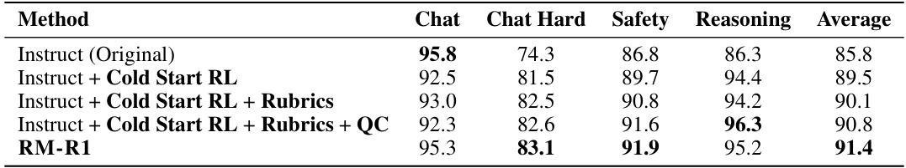
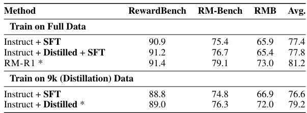
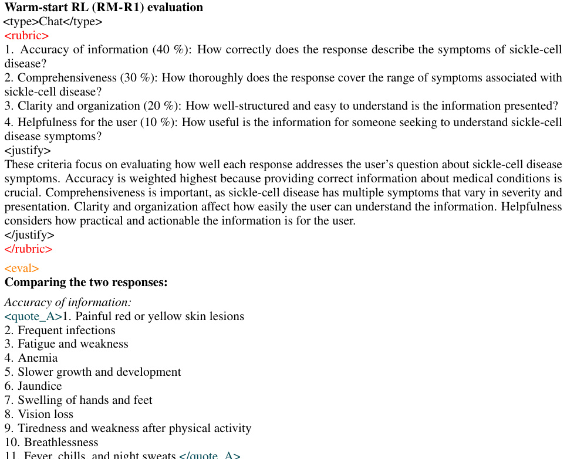

RM-R1: Reward Modeling as Reasoning
None
Abstract 解説
この論文のAbstract（要旨）では、大規模言語モデル（LLM）を人間の意図や好みに合わせて調整する上で非常に重要な「報酬モデリング（Reward Modeling: RM）」という技術に焦点を当てています。特に、報酬モデルが単に評価を下すだけでなく、その評価に至るまでの「思考プロセス」や「推論」を明確に行う能力を持たせることで、性能と解釈可能性を大きく向上させる新しいアプローチを提案しています。この新しいアプローチで開発されたモデル群が RM-R1 です。
1. 報酬モデリングの重要性と現状の課題
報酬モデリング（RM）とは？
大規模言語モデル（LLM）が、より人間にとって有用で安全な応答を生成できるようにするためには、人間の好みを学習させる必要があります。この学習プロセスは人間からのフィードバックによる強化学習（Reinforcement Learning from Human Feedback: RLHF）と呼ばれ、その中核を担うのが報酬モデル（RM）です。RMは、LLMの応答が良いか悪いかを判断し、スコア（報酬）を与える役割を果たします。
人間がLLMの応答を評価し、RMが学習
RMに求められる「深い思考」と「解釈可能な推論」
論文では、RMが正確な報酬信号を提供するためには、単に最終的なスコアや判断を出すだけでなく、その前に「深く考える」こと、そしてその思考プロセスが人間にも理解できるように「解釈可能な推論を行う」ことが重要だと指摘しています。従来のRMではこの点が不足している可能性がありました。
思考の深さと説明可能性
2. 発想と仮説：推論能力の統合
着想のヒント：近年、特に推論が重要となるタスクにおいて、長鎖思考（long chain-of-thought: CoT）と呼ばれる、ステップバイステップで推論プロセスを記述させる手法が高い性能を示すことが分かっています。
仮説：この論文では、このCoTの考え方を報酬モデリングに応用し、RMに推論能力を組み込むことで、RMの解釈可能性と性能が大幅に向上するのではないか、という仮説を立て、それを検証しています。
3. 新しいアプローチ：推論型報酬モデル（REASRMS）
この目的を達成するために、著者らは推論型報酬モデル（Reasoning Reward Models: REASRMS）という新しいクラスの生成型報酬モデルを提案しています。これは、報酬モデリング自体を一種の「推論タスク」として捉え直すものです。
具体的には、RM-R1というREASRMSのモデルファミリーを開発しました。
4. RM-R1の主要な特徴：Chain-of-Rubrics (CoR)
RM-R1はChain-of-Rubrics (CoR) というメカニズムを特徴としています。これは、RM自身が以下のような処理を行うものです。
1. 評価基準の自己生成
チャットのようなタスクでは、サンプルごとに評価基準（ルーブリック）を自動生成します。
2. 解法の自己生成
数学やコーディングのようなタスクでは、まずRM自身が問題の解法を生成します。
3. 候補応答の評価
生成した評価基準や解法に基づいて、候補となる応答を評価します。
サンプル入力 CoR (ルーブリック/解法生成) 候補応答評価 最終判断
5. RM-R1の訓練パイプライン
RM-R1の訓練は、主に2つの重要なステージで構成されます。
高品質な推論連鎖の蒸留 (Distillation)
まず、より強力なモデル（教師モデル）が生成した質の高い推論プロセス（思考の連鎖）をRM-R1に学習させます。これにより、RM-R1は「どのように推論すれば良いか」の基本的な型を学びます。
検証可能な報酬による強化学習 (Reinforcement Learning)
次に、蒸留で得た推論能力をさらに向上させるため、強化学習を行います。ここでは、RM-R1が生成した推論と最終的な判断が正しい場合に報酬を与えることで、より正確で信頼性の高い推論ができるように調整します。
6. 実験結果と成果
最先端の性能達成：実験の結果、RM-R1モデル群は3つの主要な報酬モデルベンチマークにおいて、平均して最先端（State-of-the-Art: SOTA）の性能を達成しました。
驚くべきことに、はるかに大きなサイズの公開モデル（例：INF-ORM-Llama3.1-70B）や、商用プロプライエタリモデル（例：GPT-4o）と比較しても、最大で4.9%優れた性能を示しました。
小規模モデルで大規模モデルを超える性能
これは、RM-R1の推論ベースのアプローチが非常に効果的であることを示唆しています。
7. 詳細な分析と貢献
論文では、最終的な性能だけでなく、REASRMの訓練を成功させるための鍵となる要素について、徹底的な実証分析を行っています。
将来の研究を促進するために、著者らは開発した6つのREASRMモデルと、訓練に使用したコードおよびデータを公開しています。
Abstractのまとめ
このAbstractは、報酬モデリングにおいて「推論」の能力を組み込むことの重要性を強調し、その具体的な手法としてREASRMSとRM-R1モデルを提案しています。Chain-of-Rubrics (CoR) というメカニズムや、蒸留と強化学習を組み合わせた訓練パイプラインにより、既存の強力なモデルを上回る性能を達成したことを報告しています。これにより、LLMアライメント技術の新たな方向性を示唆しています。
キーポイント
- 報酬モデリングに推論能力を導入
- 新しいモデルクラス REASRMS とその一種 RM-R1
- Chain-of-Rubrics (CoR) メカニズム
- 蒸留 + 強化学習による訓練
- 大規模モデルを凌駕するSOTA性能
- モデル、コード、データの公開による研究促進
1 Introduction
このセクションでは、論文の導入部として、報酬モデル (Reward Models, RMs) の重要性、既存の研究とその課題、そして本研究が解決しようとする中心的な問いを提示します。特に、報酬モデリングに「推論」の能力を組み込むことの可能性と必要性を探ります。
報酬モデル(RM)の役割
大規模言語モデル (LLM) が人間にとってより役立つように調整するポストトレーニングにおいて、報酬モデルは非常に重要な役割を果たします。特に、人間からのフィードバックを用いた強化学習 (Reinforcement Learning with Human Feedback, RLHF) [4, 24] という手法では、RMは人間の評価者の代わりとして機能し、LLMの応答が良いか悪いかを判断する基準となります。これにより、人間が全ての応答を評価する手間を省き、効率的にLLMを改善できます。
RLHFにおけるRMのイメージ: LLMが良い応答を生成 → RMが高い報酬を与える → LLMがその方向で学習。逆に、悪い応答には低い報酬を与え、そのような応答をしないように学習させます。
既存の報酬モデリング研究
これまでの報酬モデリング研究は、大きく分けて2つのアプローチがあります。
- 1. スカラーベース報酬モデル (ScalarRM) [20]
- 2. 生成的報酬モデル (GenRM) [40]
スカラーベース報酬モデル (ScalarRM)
報酬モデリングを分類問題として扱います。具体的には、言語モデルの上にシーケンス分類器を訓練し、応答に対して単一の数値スコア（例：良い応答なら高スコア、悪い応答なら低スコア）を出力します。
利点: 直接的で、多くの場合効果的です。
課題: 不透明性。モデルがなぜそのスコアを付けたのか、中間の推論ステップが示されません。このため、より複雑で推論を必要とするような嗜好判断タスクへの対応が難しい可能性があります。
生成的報酬モデル (GenRM)
元の言語モデルのデコーディングヘッド（文章を生成する部分）を保持し、モデルの生成的能力を活用して、自由形式でペアワイズの判断（例：「応答Aと応答Bでは、応答Aの方が良い。なぜなら～」といった説明文）を生成します。
利点: 透明性が高いです。判断理由がテキストで示されるため。
課題: 生成される推論が表面的であったり、信頼できる判断には役立たないことがあり、結果として最適なパフォーマンスが得られないことがあります [7, 22]。
ScalarRMは「なぜ？」が分からず、GenRMは「理由付けが浅い」という課題を抱えています。特に、複雑な指示や微妙なニュアンスを理解し、それに基づいて質の高い判断を下すには、より深い推論能力が求められます。
現実世界の意思決定と報酬モデリングの課題
現実世界での意思決定シナリオでは、正確で根拠のある報酬モデリングを行うためには、推論と報酬割り当てを同時に行うことがしばしば必要です。なぜなら、人間の嗜好判断は本質的に以下のような多面的な認知的考察を含むからです：
評価者の潜在的な評価基準の推測 [5]: 人間が何を重視して「良い」と判断しているのかを読み取る。
複数基準間のトレードオフの考慮 [23]: 例えば、「分かりやすさ」と「網羅性」のように、複数の評価軸がある場合に、それらのバランスをどう取るか。
潜在的な結果のシミュレーション [33]: ある応答がどのような影響をもたらすかを予測する。
これらの活動はすべて、広範な推論を必要とします。

この図は2つのパートから構成されています。上部は具体的な質問と応答の例で、なぜ報酬モデルに推論が必要かを示しています。下部は、既存の報酬モデルのアプローチ (ScalarRM, GenRM) と本論文で提案するReasRM (特にRM-R1) の違いを概念的に示しています。
上部では、ユーザーが「仕事がうまくいかず、ミスばかりしてしまう。辞めるべきか？」という悩みを打ち明けています。これに対する2つの応答が提示され、どちらがより良いかを判断するシナリオです。
- 選ばれた応答 (Chosen Response): 共感的で、間違いは学習の一部であると励まし、上司やメンターに相談することを提案する、建設的な内容です。
- 拒否された応答 (Rejected Response): 一見整っていますが、「向いてないのかも」「辞めるのも手」と、微妙にユーザーの自己否定感を強める可能性のある、有害な内容を含んでいます。
この例で正しい嗜好判断 (Chosenが良いと判断すること) を行うには、単に表面的な言葉遣いだけでなく、
- 質問（ユーザーの悩み）の意図や感情を正確に把握すること。
- 「共感と感情の妥当性確認」「心理的安全性/非有害性」「建設的で実行可能なガイダンス」「自己効力感の奨励」といった評価基準（ルーブリック）を理解し、適用すること。
- それぞれの応答がこれらの基準にどう合致するか（あるいは反するか）を説得力のある議論と共に評価すること。
が求められます。これは、人間がレポートを採点したり、論文を査読したりする際の思考プロセスと非常に似ています。
図中には <rubrics> (評価基準) や <eval> (評価内容)、<answer> (最終判断) といったタグが見られ、モデルがどのように段階的な推論を経て判断に至るかを示唆しています。この構造化された推論プロセスが重要です。
下部では、3つの主要な報酬モデルのアプローチが比較されています。
ユーザーからの質問(Query)と2つの応答(y1, y2)を受け取り、線形関数のようなもので各応答にスコアを割り当て、どちらが良いかを判断します。判断プロセスはブラックボックスになりがちです。
入力: Query, {y1, y2}
出力: Score (数値)
質問と応答ペアに対し、「どちらが良いか？」という問いに答える形で、推論トレースを含むテキスト(Reasoning Trace)や最終的な判断を生成します。学習は、望ましい推論トレースと判断を生成する尤度を最大化 (NLL最小化) することで行われます。
入力: Query, {y1, y2}
出力: Reasoning Trace, Judgment
「ステップバイステップで検証しよう...」というように、より明示的な推論プロセスを促します。RM-R1では、特にChain-of-Rubrics (CoR)という構造化された推論を行います。まず評価基準(Rubrics)を生成し、それに基づいて詳細な評価(Eval)を行い、最終的な判断(Answer)を下します。学習は、強化学習(RL)により累積報酬を最大化することで行われることがあります。
入力: Query, {y1, y2}
出力: Structured Reasoning (Rubrics, Eval), Judgment
この比較から、RM-R1がより透明性が高く、構造化された推論を行うことを目指していることが分かります。
このような観察から、本研究では以下の中心的な問いを探求します。
報酬モデリングを推論タスクとして捉えることは可能か？
この研究では、報酬モデル (RM) の推論能力を最大限に引き出すことを目指し、推論型報酬モデル (Reasoning Reward Models, REASRMS) という新しいクラスのモデルを提案します。 ✏️
従来の生成的報酬モデル (GenRM) とは異なり、REASRMSは、判断プロセス中に長く一貫した推論連鎖を活用することに重点を置きます。これにより、モデルが複雑な出力を正確に評価し、区別する能力を高めることを目指します。
判断プロセスに長い推論連鎖を組み込むことが、下流の報酬モデルのパフォーマンスを大幅に向上させることを検証します。📈
私たちは、指示チューニングされた言語モデルを論理的に一貫性のあるREASRMSに適合させるためのいくつかの戦略を探求します。特筆すべき点として、以下のことが明らかになりました。
- 📌 単に検証可能な報酬を用いた強化学習 (Reinforcement Learning with Verifiable Rewards, RLVR) [12] を報酬モデリングに適用するだけでは、モデルの推論能力を完全には引き出せないこと。
- 📌 単純な思考の連鎖 (Chain-of-Thought, CoT) 推論では、異なる質問タイプ間の微妙な違いを認識するには不十分であること。
一連の研究を通じて、私たちはRLVRの前に推論蒸留 (reasoning distillation) を導入するトレーニングパイプラインを設計し、最終的にRM-R1を開発しました。
高品質な推論プロセスをモデルに教え込む。
推論能力をさらに強化・洗練させる。
RM-R1の推論能力を報酬モデリングに最大限に活用するために、私たちはChain-of-Rubrics (CoR) プロセスを設計しました。具体的には、モデルは入力サンプルを以下の2つのカテゴリのいずれかに分類します。
チャット (Chat) タスク
モデルは、特定の質問に合わせて評価基準のセット（ルーブリック）、ルーブリックの正当化、および評価を生成します。
推論 (Reasoning) タスク
この種のタスクでは、正しさが最も重要であり、一般的に優先される評価基準です。そのため、モデルにはまず問題自体を解決させ、その後に優先される応答を評価・選択させます。
このタスク認識 (task perception) により、モデルはその展開戦略を調整することができます。つまり、チャットタスクにはルーブリックベースの評価を適用し、推論タスクには正しさ第一の判断を適用することで、より整合性があり効果的な報酬シグナルをもたらします。📊
さらに、既存の推論モデルを報酬モデルに直接適合させる方法も探求します。これらのモデルは既に実質的な推論に焦点を当てた蒸留を経ているため、追加の蒸留段階なしにRLVRを使用してファインチューニングします。私たちのトレーニングレシピに基づいて、7Bから32Bの範囲のRM-R1モデルを生成します。
RM-R1の経験的評価
経験的に、RM-R1モデルは一貫して非常に解釈可能で一貫性のある推論トレースを生成します。平均して、RM-R1はRewardBench [17]、RM-Bench [21]、およびRMB [43]で最先端のパフォーマンス (state-of-the-art, SOTA)を達成し、70B、340Bパラメータのモデルや、GPT-4o、Claudeといったモデルを最大で4.9%上回ります。🚀
図1下部のRM-R1の構造化推論の図を再掲します。RM-R1はクエリと2つの応答 {y1, y2} を受け取ると、まず <rubrics> (評価基準) を生成します。この例では「1. 共感と感情の妥当性確認 II... III...」といった具体的な基準が示されています。次に、これらの基準に基づいて <eval> (評価) を行い、「最初の応答はユーザーの感情を妥当とし...」といった形で、各応答が基準にどう合致するかを説明します。最後に、 <answer> タグで「最初の応答が良い」という最終判断を下します。このような多段階のChain-of-Rubricsと複雑な批評(Complex Critique)がRM-R1の特徴です。
最終的なパフォーマンスだけでなく、RM-R1の広範な経験的分析も行います。これには、トレーニングレシピのアブレーションスタディ、スケーリング効果の研究、非推論ベースラインとの比較、詳細なケーススタディ、およびトレーニングダイナミクスが含まれます。
- 報酬モデルにとって推論能力が不可欠であることを示し、解釈可能性と精度を向上させるために報酬モデリングを推論プロセスとして定式化することを提案します。
- 推論指向の蒸留とRLに基づくトレーニングレシピを設計し、平均してより大きなモデルを最大4.9%上回ることができる報酬モデルのセット – RM-R1 – を生成します。
- REASRMSのためのさまざまなトレーニングレシピの体系的な経験的研究を提示し、多様なトレーニング戦略が最終的な報酬モデルのパフォーマンスに与える影響についての洞察を提供します。
2 RM-R1
このセクションでは、論文で提案されている新しい推論型報酬モデル RM-R1 の訓練パイプライン全体像について解説します。RM-R1の訓練は、大きく分けて以下の2つのステージで構成されています。
推論蒸留 (Reasoning Distillation)
まず、市販の命令チューニング済みモデル（例：Qwen-2.5-14B-Instruct）を出発点とします。このモデルに対し、高品質な合成推論トレースを用いて追加学習を行います。このステージの目的は、RM-R1に効果的な報酬モデリングを行うために不可欠な基本的な推論能力を装備させることです。いわば、モデルに「お手本」を見せて考え方の筋道を教え込む段階です。
強化学習 (Reinforcement Learning)
推論蒸留は推論パターンを注入するのに効果的ですが、蒸留されたモデルは訓練データ中の特定のパターンに過学習してしまい、汎化能力が制限されることがあります[9]。この限界を克服するため、強化学習フェーズを導入します。このフェーズでモデルをさらに最適化し、最終的なRM-R1を完成させます。試行錯誤を通じて、より柔軟で応用力の高い推論能力を磨き上げます。
重要なポイント
論文では図2 (Figure 2) でこの訓練パイプラインの全体像が示されています。この2段階のアプローチにより、RM-R1は高い解釈性と性能を両立することを目指します。2.1 Task Definition
まず、この研究で取り組むタスクを明確に定義しましょう。報酬モデリングは、与えられたプロンプトに対する2つの応答のうち、どちらがより好ましいかを判断するモデルを構築することです。
選好データセット \(\mathcal{D}\)
訓練には、以下のような構造の選好データセット \(\mathcal{D}\) を用います：
ここで、各要素は以下の通りです：
- ✏️ \(x^{(i)}\): プロンプト（質問や指示）
- 📝 \(y_a^{(i)}\): プロンプト \(x^{(i)}\) に対する1つ目の応答
- 📝 \(y_b^{(i)}\): プロンプト \(x^{(i)}\) に対する2つ目の応答
- 🏷️ \(l^{(i)} \in \{a, b\}\): どちらの応答が好ましいかを示す正解ラベル（例：'a'なら \(y_a^{(i)}\) が好ましい）
このデータセットが \(N\) 個のサンプルから構成されることを示しています。
具体例：
\(x\): 「日本の首都はどこですか？」
\(y_a\): 「東京です。」
\(y_b\): 「大阪です。」
\(l\): 'a' (応答Aが好ましい)
次に、生成的報酬モデリング (generative reward modeling) タスクを以下のように定義します。
生成的報酬モデル \(r_{\theta}\)
パラメータ \(\theta\) によって特徴づけられる生成的報酬モデルを \(r_{\theta}\) とします。各データサンプル \((x, y_a, y_b)\) に対して、\(r_{\theta}\) はテキストによる判断 \(j\) を生成します。この判断 \(j\) は、\(j = (j_1, j_2, \dots, j_T)\) のように順序付けられたトークンの列から成り、以下のようにモデル化されます：
この数式の意味は：
- 判断 \(j\) 全体が生成される確率は、各トークン \(j_t\) がそれ以前のトークン列 \(j_{
- これは、言語モデルがテキストを生成する際の標準的な自己回帰的なアプローチです。つまり、一つ前の単語（トークン）に基づいて次の単語を予測していく流れです。
- 生成される判断 \(j\) の中には、モデルが予測した好ましい応答のラベル \(\hat{l}\) が含まれています。(\(\hat{l} \subset j\))
全体的な目的
このタスクの最終的な目的は、以下の式を最大化するようなモデル \(r_{\theta}\) を見つけることです：
この数式の意味は：
- \(\mathbb{E}[\cdot]\): 期待値を表します。データセット \(\mathcal{D}\) からランダムにサンプルを選び、またモデル \(r_{\theta}\) が判断 \(j\) (そこから予測ラベル \(\hat{l}\) が抽出される) を生成する際のランダム性も考慮します。
- \(\mathbb{1}(\hat{l} = l)\): 指示関数です。モデルの予測した選好ラベル \(\hat{l}\) が、人間が付与した正解ラベル \(l\) と一致すれば 1 を、一致しなければ 0 を返します。
- つまり、この目的関数は、モデルが正しい選好判断を行う平均的な確率（正解率）を最大化することを目指しています。
2.2 Reasoning Distillation for Reward Modeling
命令チューニング済みのモデル（例: Qwen-2.5-14B-Instruct [37]）は、プロンプトを与えることで単純な生成的報酬モデル (GenRM) に変えることは直感的に可能です。しかし、報酬モデリングのための推論トレース（なぜその判断に至ったかの思考プロセス）でファインチューニングを行わないと、これらのモデルは一貫性のある判断を下すのに苦労する可能性があります。
そこで、モデルの推論能力をブートストラップ（初期段階で能力を引き上げる）するために、報酬モデリング用に合成された長い推論トレースで命令チューニング済みモデルを訓練することから始めます。
データサンプリング: まず、元の選好データセット \(\mathcal{D}\) から \(M\) 個のデータサンプルを抽出し、これを \(\mathcal{D}_{\text{sub}}\) とします。
推論トレース生成: \(\mathcal{D}_{\text{sub}}\) の各サンプル \((x^{(i)}, y_a^{(i)}, y_b^{(i)}, l^{(i)})\) について、「オラクル」モデル（例: o3 や claude-3-7-sonnet のような高性能なモデル）に、なぜ \(y_{l^{(i)}}^{(i)}\) （つまり正解とされた応答）が \(x^{(i)}\) の好ましい応答として選ばれたのかを正当化する構造化された推論トレース \(r^{(i)}\) を生成させます。
オラクルモデルの役割: より賢い先生役として、質の高い思考プロセスのお手本を提供します。
グラウンドトゥルース構築: 生成された推論トレース \(r^{(i)}\) と正解ラベル \(l^{(i)}\) を使って、推論トレースのグラウンドトゥルース（正解データ） \(y_{\text{trace}}^{(i)}\) を以下のように構築します。
ここで、\(\oplus\) は文字列の連結を示します。つまり、推論の文章の末尾に、最終的な判断ラベルを付け加える形です。
例： \(r^{(i)}\) = 「応答Aは詳細で具体的だが、応答Bは簡潔で要点を押さえている。質問の意図を考えると応答Bの方が適切だ。」、\(l^{(i)}\) = 「B」 ならば、\(y_{\text{trace}}^{(i)}\) = 「応答Aは詳細で具体的だが、応答Bは簡潔で要点を押さえている。質問の意図を考えると応答Bの方が適切だ。B」
蒸留データセット作成: 合成されたすべての推論トレース \(r^{(i)}\) を用いて、最終的な蒸留データセット \(\mathcal{D}_{\text{distill}}\) を以下のように定義します。
このデータセットは、プロンプト \(x^{(i)}\) と、それに対する理想的な推論トレースと最終判断 \(y_{\text{trace}}^{(i)}\) のペアから構成されます。
蒸留の目的
蒸留の目的は、モデルのパラメータ \(\theta\) を調整して、与えられたプロンプト \(x\) に対して、望ましい推論トレースを生成し、正しい応答 \(y\) を選択する尤度を最大化することです。具体的には、以下の負の対数尤度 (Negative Log-Likelihood, NLL) 損失を最小化します。
この数式の意味は：
- \(\mathcal{D}_{\text{distill}}\) 内の各サンプル \((x, y)\) （ここで \(y\) は \(y_{\text{trace}}\) のこと）について計算します。
- 内側の和 \(\sum_{t \in [|y|]}\) は、正解の推論トレース \(y\) の各トークン \(y_t\) についてループします。\(|y|\) は \(y\) のトークン長です。
- \(\log r_{\theta}(y_t | x, y_{
- この対数尤度に負号をつけたものを最小化することで、モデルが正解の推論トレースを生成する確率を最大化します。これは、教師あり学習における標準的な言語モデリングの損失関数です。
補足
高品質な推論チェーンを生成する詳細については、論文の付録B (Appendix B) に記載されています。
2.3 RL Training
蒸留は汎用的な生成モデルを GenRM (生成的報酬モデル) に変える適切な方法ですが、特定のパターンに過学習 (overfitting) しやすく、批判的思考のための推論能力を一般化する上でモデルの能力を制約してしまうことがよくあります [9, 31]。これは報酬モデリングにとって不可欠な能力です。
この問題に対処するため、強化学習 (Reinforcement Learning, RL) をより強力な学習パラダイムとして統合し、推論に基づいた報酬付与を行うモデルの能力を強化することを提案します。RL を用いてポリシーモデルを訓練することは、LLM のポストトレーニングにおける選好最適化フェーズで広く見られ [24]、このパラダイムを REASRM (推論型報酬モデル) の訓練に拡張するのは自然な流れです。
具体的には、我々の報酬モデル \(r_{\theta}(j | x, y_a, y_b)\) を直接ポリシーモデルとして扱います。ここでの \(j\) はモデルが生成する判断（推論トレースと最終的な選好判断 \(\hat{l}\) を含む）です。目的は以下を最大化することです：
この数式の各項の意味は：
- \(\mathbb{E}[\mathcal{R}(x, j)]\): モデル \(r_{\theta}\) が生成した判断 \(j\) (入力プロンプト \(x\)、応答ペア \(y_a, y_b\)、正解ラベル \(l\) はデータセット \(\mathcal{D}\) からサンプリング) に対する期待報酬。この報酬 \(\mathcal{R}(x, j)\) は、モデルの判断がどれだけ良いかを評価する関数です（詳細は後述の Reward Design で説明）。
- \(\beta \mathbb{D}_{\mathrm{KL}}(r_{\theta} \| r_{\mathrm{ref}})\): KLダイバージェンスペナルティ項。モデル \(r_{\theta}\) が参照モデル \(r_{\mathrm{ref}}\) から大きく逸脱するのを防ぎます。\(\beta\) はこのペナルティの強さを調整する係数です。
- \(r_{\mathrm{ref}}\): 参照報酬モデル。実際には、RL訓練前のチェックポイント（つまり、市販のLLMやセクション2.2の蒸留ステップ後のLLM）を使用します。これにより、学習が安定し、元のモデルの能力を維持しやすくなります。
- \(x\): 選好データ \(\mathcal{D}\) から抽出された入力プロンプト。
- \(j\): 報酬モデルによって生成されたテキストで、推論トレースと最終判断 \(\hat{l}\) を含みます。
最適化手法
実際には、この目的関数 (式7) を最適化するために Group Relative Policy Optimization (GRPO) [28] を使用します。GRPO の詳細については、論文の付録C (Appendix C) を参照してください。
Chain-of-Rubrics (CoR) Rollout for Instruct Models
このセクションでは、Instructモデル（指示に従うように訓練されたモデル）が強化学習のロールアウト（モデルに応答を生成させるプロセス）中に使用する特別なプロンプト、Chain-of-Rubrics (CoR) について説明します。これは、モデルに特定の思考の枠組みを与えることで、より質の高い判断を促すためのものです。
以下がCoRプロンプトのテンプレートです（論文中のFigure 3に相当）。
公平な審査員として行動し、以下に表示されるクライアントの質問に対する2つのAIチャットボットの応答の品質を評価してください。
まず、タスクを次の2つのカテゴリのいずれかに分類してください: <type> Reasoning </type> または <type> Chat </type>。
- 数学、コーディング、またはドメイン知識、複数ステップの推論、論理的推論、あるいは結論に達するための情報統合を伴うタスクには <type> Reasoning </type> を使用してください。
- 自由形式または事実に基づいた会話、文体の書き換え、安全性に関する質問、または深い推論を伴わない一般的な有用性の要求を伴うタスクには <type> Chat </type> を使用してください。
If the task is Reasoning:
タスクが「推論」カテゴリに分類された場合の指示です。
- クライアントの質問を自分で解き、最終的な解答を <solution> ... </solution> タグ内に提示してください。
これはモデル自身にまず問題解決を試みさせることで、評価の基準を確立させます。
- あなた自身の解答を参照しながら、正確性、完全性、推論の質に基づいて2つのチャットボットの応答を評価してください。
- 評価を <eval> ... </eval> タグ内に含め、以下のタグを使用してチャットボットを引用または要約してください：
- <quote_A> ... </quote_A>: チャットボットAからの直接引用
- <summary_A> ... </summary_A>: チャットボットAの言い換え
- <quote_B> ... </quote_B>: チャットボットBからの直接引用
- <summary_B> ... </summary_B>: チャットボットBの言い換え
- 最後に、最終的な判断を次の形式で終了してください: <answer>[[A]]</answer> または <answer>[[B]]</answer>
If the task is Chat:
タスクが「チャット」カテゴリに分類された場合の指示です。
- クライアントの質問と文脈に合わせて調整された評価基準（ルーブリック）を生成し、<rubric> ... </rubric> タグで囲んでください。
ルーブリックとは、評価項目とその基準を明示したものです。これにより評価の一貫性と透明性が高まります。
- 各ルーブリック項目に、その相対的な重要性に基づいて重みを割り当ててください。
- <rubric> 内に、それらのルーブリック基準と重みを選んだ理由を説明する <justify> ... </justify> セクションを含めてください。
重み付けと正当化により、なぜ特定の基準が重視されるのかが明確になります。
- ルーブリックに従って両方のチャットボットの応答を比較してください。
- 評価を <eval> ... </eval> タグ内に提供し、上記で説明した <quote_A>, <summary_A>, <quote_B>, <summary_B> を使用してください。
- 最後に、最終的な判断を次の形式で終了してください: <answer>[[A]]</answer> または <answer>[[B]]</answer>
2.3.1 Chain-of-Rubrics (CoR) Rollout
蒸留されたモデルが効果的な推論トレースを積極的に生成するのを促進するために、ロールアウト中に図3（前述のCoRプロンプト）に示すようなシステムプロンプトを設計しました。
直感的には、一般的なドメイン（チャット、安全性など）と推論ドメイン（数学、コードなど）の報酬モデリングは、異なる側面に焦点を当てるべきです。
チャットドメイン
テキストベースのルーブリックで表現できる側面（例：丁寧であること）により関心を持つかもしれません。
推論ドメイン
通常、論理的一貫性や解答の正しさをより重視します。
この直感に基づいて、報酬モデル \(r_{\theta}\) に各選好データサンプル \(\{ (x, y_c, y_r) \}\) （ここで \(y_c\) は選択された応答、\(y_r\) は棄却された応答の意図と思われますが、論文では \(y_a, y_b\) と表記しており、文脈から判断すると \(y_c\) は好ましい応答、\(y_r\) は好ましくない応答を指すと考えられます）を <type> Chat または <type> Reasoning のいずれかに分類するよう指示します。
各タイプについて、\(r_{\theta}\) にそのタイプに対応する行動を段階的に実行させます：
- 推論タスクの場合:
- モデル \(r_{\theta}\) に、まずプロンプト \(x\) を自力で解かせます (<solution> タグ内)。
- <eval> フェーズでは、\(r_{\theta}\) は自身が生成した </solution> を条件として、\(y_c\) と \(y_r\) (元の \(y_a, y_b\)) を比較し、<answer> を選択します。
- チャットタスクの場合:
- モデル \(r_{\theta}\) に、チャットの品質（安全性を含む）を採点するための <rubric> を考え、それを正当化 (<justify>) させます。
- その後、そのルーブリックに基づいて評価し、<answer> を選択します。
CoRのメリット
このようにタスクの種類に応じて異なる戦略（推論タスクでは自己解決と正しさ優先、チャットタスクではルーブリックベースの評価）を適用することで、より文脈に即した、効果的な推論と判断を促します。
2.3.2 Reward Design
ルールベースの報酬メカニズムは、推論を促進する上で強力な経験的パフォーマンスを示してきました [12]。今回の訓練では、報酬の定式化をさらに単純化し、先行研究 [28, 18] に沿って、正解性に基づく要素にのみ焦点を当てます。
報酬の定義
具体的には、報酬 \(\mathcal{R}(x, j | y_a, y_b)\) は以下のように定義されます：
この数式の意味は：
- \(\hat{l}\): モデルが生成した判断 \(j\) から抽出された予測ラベル。具体的には、<answer> と </answer> トークンの間に挟まれた部分から抽出されます。
- \(l\): 人間が付与した正解ラベル。
- モデルの予測 \(\hat{l}\) が正解 \(l\) と一致すれば、報酬として +1 を与えます。
- 一致しなければ、報酬として -1 を与えます。（論文では明記されていませんが、しばしば不正解の場合は0や負の値を設定します。ここでは-1と明記されています）
試行と発見
フォーマット報酬（生成されたテキストが特定の形式に従っているかどうかに基づく報酬）を全体の報酬に追加することも試みましたが、タスクのパフォーマンスには有意な差が見られなかったとのことです。
正解性のみに焦点を当てる理由
正解性のみに焦点を当てる背後にある論理的根拠は、蒸留されたモデルが既に指示に従い、応答を適切にフォーマットすることを学習しているためです。つまり、蒸留段階で基本的な「お作法」は身につけているので、強化学習段階ではより本質的な「正しさ」を追求するという戦略です。
3 Experiments
このセクションでは、提案された新しい報酬モデル RM-R1 の性能を検証するための実験について詳しく説明します。主な目的は、RM-R1が既存の様々な報酬モデルと比較してどれだけ優れているか、そしてその性能がどのような要因によって達成されているのかを明らかにすることです。
論文の核心的な主張は、「報酬モデリングに推論能力を組み込むことで、モデルの解釈性と性能が大幅に向上する」というものです。このセクションでは、その主張を裏付けるための具体的な実験結果が示されます。RM-R1が、より大きなモデルや商用の強力なモデルさえも上回る性能を示すことがハイライトされています。特に、REASRMS (Reasoning Reward Models) という新しいカテゴリの可能性と、RM-R1の訓練戦略の有効性が強調されます。
3.1 Experimental Setup
RM-R1の性能を評価するために、どのような実験設定が用いられたかを見ていきましょう。適切な評価のためには、ベンチマーク、訓練データ、比較対象となるベースラインモデルの選定が重要です。
RM-R1の性能は、以下の3つの主要なベンチマークで評価されました：
- RewardBench [17]: 報酬モデルを評価するために設計されたベンチマーク。チャット、チャット(ハード)、推論、安全性といった多様なカテゴリのプロンプトと応答ペアを含みます。
- RM-Bench [21]: RewardBenchを拡張し、コンテンツの微妙な違いに対する感度やスタイルバイアスへの耐性など、より詳細な評価項目を含むベンチマーク。特に推論能力を重視しています。
- RMB [43]: 報酬モデルの「役立ち度 (helpfulness)」と「無害性 (harmlessness)」を包括的に評価するベンチマーク。多様な実世界のシナリオに基づいています。
これらのベンチマークは、報酬モデルが様々な側面で人間のように適切に判断できるかを測るための「試験問題」のようなものです。
RM-R1の訓練には、以下のデータセットが使用されました：
- Skywork Reward Preference 80K [20] のクリーンなサブセット: 多様なドメインの選好ペアデータ。
- Code-Preference-Pairs からの8K例: コーディングタスクに関する選好データ。
- Math-DPO-10K [16] の全データセット: 数学の推論に関する選好データ。
これらのデータセットは、RM-R1が「良い応答」と「悪い応答」を見分けるための「教科書」の役割を果たします。特に、数学やコーディングといった推論能力が求められるタスクのデータも含まれている点が特徴です。
RM-R1の性能を比較するために、以下の3つの主要カテゴリの報酬モデル (RMs) がベースラインとして設定されました：
ScalarRMs (スカラー報酬モデル)
応答に対して単一の数値スコアを出力するタイプの報酬モデル。従来の代表的なアプローチです。
例：Eurus-RM, Internlm2, SteerLM-RMなど (Appendix D.3参照)。
GenRMs (生成型報酬モデル)
応答に対する評価を自由形式のテキスト（例：なぜこの応答が良いか）で生成するタイプの報酬モデル。
例：LLaMA, Qwen, GPT-4oなど (Appendix D.3参照)。
REASRMS (推論型報酬モデル)
本論文で注目している、報酬モデリングを推論タスクとして捉え、明示的な推論プロセスを経て評価を行うモデル。RM-R1もこのカテゴリに属します。
例：JudgeLRM, DeepSeek-GRMなど (Appendix D.3参照)。
より詳しいベンチマーク、データセット構築、具体的なベースラインモデルに関する詳細は、論文の Appendix D に記載されています。
表1：主要ベースラインモデルとの性能比較概要
次の表1は、最も性能の高いベースラインモデルとRM-R1の性能を比較したものです。この表は、RM-R1が全体的に優れた性能を示すことを示唆しています。詳細な数値はAppendixの表6、7、8で確認できます。
太字は最も良い性能、下線付き数字は2番目に良い性能を示します。DeepSeek-GRMモデルは重みが公開されていないため、技術レポートの数値を使用しています。
表1の見方：この表は、さまざまな報酬モデルの性能をいくつかの評価指標（ベンチマーク）で比較しています。RM-R1ファミリーのモデルが、他の多くの既存モデルと比較して高いスコアを達成していることが読み取れます。特に「Average」の列に注目すると、全体的な性能の傾向が掴めます。
3.2 Main Results
実験の結果、RM-R1はどのような性能を示したのでしょうか？ここでは、主な結果とその意義について詳しく見ていきます。
表1は、RM-R1と既存の最も強力なベースラインモデルとの全体的な性能比較を示しています。より詳細なRewardBench、RM-Bench、RMBでの数値は、Appendix F の表6、表7、表8に記載されています。
ベースラインの数値については、モデルのチェックポイントやシステムプロンプトなど、必要なリソースがオープンソース化されている場合は研究者たちが再現実験を行い、そうでない場合は、元の技術レポートやベンチマークのリーダーボードに報告されている数値を使用しています。各ベンチマークにおいて、簡潔さのために各カテゴリで最も性能の良いモデルが選ばれています。
主な発見は以下の通りです：
State-of-the-Art (SOTA) の達成
平均的に、RM-R1ファミリーの RM-R1-DeepSeek-Distilled-Qwen-14B モデルは、以前の主要な報酬モデルすべてを凌駕しました。これには、INF-ORM-Llama3.1-70B、Nemotron-4-340B-Reward、そして GPT-4o といった、はるかに大きなモデルや強力な商用モデルも含まれます。しかも、RM-R1はこれらをより小さなスケールで達成しています。
RM-R1-Qwen-Instruct-32B と RM-R1-DeepSeek-Distilled-Qwen-32B (32Bモデル) は、このリードをさらに顕著な差で広げています。
RM-R1の成功は、以下の2つの要因に起因すると考えられます：
- meticulously designed training methodology (綿密に設計された訓練方法論)
- effective scaling of our models (モデルの効果的なスケーリング)
これらの要因については、セクション4.1と4.2で詳細に分析されています。
特筆すべきは、RM-R1が既存のトップクラスのScalarRMsを上回ったことです。これは、REASRMS (推論型報酬モデル) の大きな可能性を示唆しています。従来、GenRMs (生成型報酬モデル) はこのカテゴリで最適とは言えない性能を示し、一般的にScalarRMsと比較できるレベルではありませんでした。
RM-R1のstructured rollout (構造化されたロールアウト) と distillation with RLVR training strategy (RLVR訓練戦略による蒸留) とは対照的に、従来のcritique-based methods (批評ベースの手法) は、主に以下の点に依存していました：
- rejection sampling (棄却サンプリング)
- unstructured, self-generated chain-of-thought (CoT) reasoning from instruct models (指示モデルからの非構造化された自己生成の思考連鎖推論)
これらの手法は、推論能力が限定され、ScalarRMsと比較して劣った性能につながっていました。
同時に、この論文の包括的な評価は、RewardBenchでトップクラスの性能を示すスカラーモデルが、必ずしも常に最先端 (SOTA) の性能を達成するわけではないことを示しています。実際、より大きなモデルがより小さなモデルよりも性能が低いことが頻繁にあります。この評価は、報酬モデルの評価に対して、より包括的で体系的なアプローチが必要であることを強調しています。
報酬モデリングのための効果的な推論指向訓練
RM-R1の専門化された、reasoning-oriented training pipeline (推論指向の訓練パイプライン) は、大幅な性能向上をもたらします。
例えば、RM-R1-Qwen-Instruct-14B は、その5倍のサイズの推論モデルである Self-taught-evaluator-llama-3.1-70B を一貫して上回ります。
数学で 91.8% の精度
コードで 74.1% の精度
これは、以前の最高モデル（数学で73%、コードで63%）を大幅に上回っています。さらに、このモデルはRewardBenchにおいても、リリースされたモデルの中で最も強力な推論性能を記録しています。
その性能にもかかわらず、RM-R1のInstruct-based models (指示ベースのモデル) は非常にデータ効率が良いです。蒸留にはわずか 8.7K の例を使用するだけで競争力のある性能に達しています。これは、DeepSeek-Distilled [12] の訓練で使用された 800K の例と比較して非常に少ないです。
全体として、この研究は、大規模な推論モデルを直接的に非常に効果的な報酬モデルに適応させることの大きな可能性を強調しています。
4 Analysis
このセクションでは、効果的な推論型報酬モデル（Reasoning Reward Models, REASRMS）を訓練するための重要な要素を明らかにするため、一連の経験的な分析を行います。分析は、スケーリング効果、設計上の決定、推論に関するアブレーションスタディ、そしてケーススタディに及びます。なお、訓練ダイナミクスに関する追加の分析は、論文の付録G.2に記載されています。
4.1 Training Recipes
まず、RM-R1の成功の根底にある重要な学習方法の要素を調査します。一連のアブレーションスタディ（特定の要素を除外して影響を調べる研究）を通じて、高品質な推論型報酬モデルを訓練するための効果的な戦略を特定するために、私たちの設計選択を検証します。以下の設定を比較します：
Cold Start RL
事前の蒸留などを行わず、強化学習（RL）のみでモデルを訓練する方法。
Cold Start RL $^+$ Rubrics
Cold Start RL に加え、モデルが自己生成するルーブリック（評価基準）に基づいて判断を行うよう指示する方法。
Cold Start RL $^+$ Rubrics $^+$ Query Categorization (QC)
上記に加えて、クエリ分類（Query Categorization, QC）を導入し、タスクの種類に応じて戦略を変える方法。
Distilled $ \mathbf{\nabla} + \mathbf{RL} + \mathbf{Rubrics + QC} $ (RM-R1)
高品質な推論トレースを蒸留（Distillation）した後、強化学習、ルーブリック、クエリ分類を適用する、本論文の提案手法 RM-R1。
これらの設定の詳細は、論文の付録G.1に記載されています。
用語解説：アブレーションスタディ
モデルやシステムの特定の構成要素や機能を意図的に取り除いたり変更したりして、その要素がシステム全体の性能や挙動にどのような影響を与えるかを評価する実験手法です。どの要素が重要であるかを特定するのに役立ちます。
用語解説：ルーブリック (Rubrics)
評価基準や評価項目を具体的に示したリストのことです。この論文では、AIモデルが生成する応答の質を評価するために、モデル自身がこれらのルーブリックを生成し、それに基づいて判断を行います。
用語解説：クエリ分類 (Query Categorization, QC)
ユーザーからの入力（クエリ）を、その内容や目的に応じて事前に定義されたカテゴリに分類することです。例えば、「チャット」に関する質問か、「推論」を必要とする質問かを分類します。これにより、タスクに応じた最適な処理戦略を選択できます。
用語解説：蒸留 (Distillation)
大規模で高性能なモデル（教師モデル）が持つ知識や能力を、より小規模なモデル（生徒モデル）に転移させる学習手法です。教師モデルの出力（この場合は高品質な推論トレース）を生徒モデルが模倣するように学習させます。
下のTable 2は、これらのアブレーションスタディの結果を示しており、Instruct (Original) モデルとして Qwen-2.5-Instruct-32B を使用しています。
Table 2: RewardBenchにおける推論トレーニングのデザイン選択に関するアブレーションスタディ
Table 2 から、いくつかの重要な結論が導き出されます：
RLトレーニングだけでは不十分
Cold Start RLは、難しいチャットタスクや推論タスクのパフォーマンスをわずかに改善しますが、完全に最適化されたモデルとの差を埋めるには至りません。
CoRプロンプティングがRMロールアウトを最適化し、推論性能を向上
RM-R1に、判断前にチャットのルーブリックや問題の解法を自己生成するよう指示するCoR (Chain-of-Rubrics) プロンプティングは、特にチャットタスクや安全性タスクにおいて、全体的なパフォーマンスを向上させます。プロンプトに明示的なクエリ分類を組み込むことは、推論性能を著しく改善し、より明確なタスクガイダンスが学習に利益をもたらすことを示唆しています。
蒸留がさらに全軸で性能を向上
RLの前にモデルに高品質な推論トレースをシード（初期知識として与えること）することで、最も強力な結果が得られ、難しいタスクと安全性に敏感なタスクの両方で改善が見られました。
⋆ Takeaway 1:
重要な発見！
数学タスクで使われるような強化学習のレシピをそのまま複製するだけでは、強力な推論型報酬モデルを訓練するには不十分です。 明示的なクエリ分類と、高品質な推論トレースのターゲットを絞った蒸留の両方が、堅牢で一般化可能な改善を達成するためには不可欠です。
4.2 Scaling Effects
次に、モデルのパフォーマンスがスケール（モデルサイズと推論時の計算量）によってどのように変化するかを調査します。InternLM2 [6] や Skywork [20] のScalarRMのような一部のケースでは、小さいモデル（7B/8B）が大きいモデル（20B/27B）を上回り、スケーリングの利点が見られませんでした。このサブセクションでは、RM-R1ではこの傾向が当てはまらず、スケーリングが明確かつ実質的な改善をもたらすことを示します。
4.2.1 Model Sizes
まず、モデルスケールの影響を分析します。この研究は、Qwen-2.5-Instructモデルファミリーの3つのサイズ（7B, 14B, 32B）に基づいています。セクション2で説明した訓練手順によるパフォーマンス改善を評価し、結果は3つの主要ベンチマーク（RewardBench, RM-Bench, RMB）で平均化されています。
各モデルサイズについて、訓練前後のパフォーマンスを比較します。下のFigure 4aは、モデルサイズに対する相対的な改善率（%）をプロットしたものです。ほぼ線形の傾向が観察されたため、線形回帰モデルを適合させ、仮説的なスケールである3Bと72Bに外挿しています（薄いマーカーと破線の延長で示されています）。
Figure 4: (a) モデルサイズのスケーリング効果 (b) 推論時計算量のスケーリング効果
Figure 4a の解説
グラフの横軸はモデルサイズ（パラメータ数、Billion単位）、縦軸は訓練によるパフォーマンスの相対的改善率 (%) を示しています。●印は実際の実験結果で、点線は線形回帰による予測です。
- 7B, 14B, 32B のモデルサイズで実験が行われています。
- モデルサイズが大きくなるにつれて、訓練によるパフォーマンス改善率もほぼ線形に増加していることがわかります。
- この結果は、推論型報酬モデルのスケーリング則の存在を強く支持しています。つまり、より大きなモデルは、最終的な絶対性能が向上するだけでなく、訓練による性能向上も一貫して大きくなるということです。
- これは、我々の訓練方法が、より大きなモデルが持つ優れた推論能力を効果的に活用しているという直感と一致します。
4.2.2 Inference-time Computation
次に、推論時に許可されるトークン数で測定される、異なる計算バジェットでモデルのパフォーマンスがどのように変化するかを調べます。これは特に推論に焦点を当てたモデルに関連するため、ベースモデルを DeepSeek-R1-Distill-Qwen-14B に固定します。3つの主要ベンチマークで、幅広い推論時計算バジェット（512, 1024, 2048, 4096, 8192 トークン）を使用して平均パフォーマンスを評価します。
公正な比較を保証するために、各設定で訓練時のロールアウトバジェットを推論バジェットに一致させます（つまり、推論時に \(k\) トークンの計算バジェットに対して、訓練中も最大 \(k\) トークンを許可します）。すべてのモデルは、同一のデータセットとハイパーパラメータ構成を使用してGRPOで訓練されます。上の Figure 4b は、計算バジェットとパフォーマンスの関係を示しています。
Figure 4b の解説
グラフの横軸は推論時の計算バジェット（最大トークン数）、縦軸はモデルのパフォーマンスを示しています。
- 計算バジェットが増加するにつれて（つまり、推論に使用できるトークン数が増えるほど）、パフォーマンスが明確に改善する傾向が見られます。
- これは、報酬モデリングにおいて長い推論連鎖（より多くの思考ステップ）が有益であることを強調しています。
- つまり、モデルがより多くの「考える時間」（トークン数）を与えられるほど、より良い判断ができるようになることを示唆しています。
Takeaway 2:
スケーリングの力！
スケーリングは報酬モデルのパフォーマンスを向上させます：モデルサイズと推論時の計算量の両方で、ほぼ線形の傾向が観察されます。 大きなモデルは、我々の推論ベースの訓練パイプラインから一貫してより多くの恩恵を受け、より長い推論連鎖は、より高い計算バジェットの下でますます効果的になります。
4.3 Effectiveness of Reasoning Training
ここでは、推論ベースの訓練の影響を分析します。推論ベースの訓練が、最終的な回答のみを対象とするアプローチよりも優れたパフォーマンスを発揮できることを示します。以下の設定を検討します：
Instruct + SFT
このアプローチは、instruction-tunedモデルを、中間的な推論連鎖を提供せずに、データセット全体を使用して正しい最終回答を生成するように直接ファインチューニングします。
Instruct $^+$ Distilled $^+$ SFT
このアプローチは、蒸留段階の後に（最終回答に対して直接）SFTを適用し、RLで訓練されたRM-R1との直接比較ポイントとして機能します。
Instruct $^+$ RM-R1 (Distilled $\mathbf{\nabla} + \mathbf{RL}$)
これは本論文で提案されている完全なアプローチであり、セクション2で詳述された手順に従います。
Instruct $^+$ Distilled
この設定では、RLファインチューニングの前に、蒸留段階直後のモデルチェックポイントを使用します。
要約すると、"$\cdot ^\circ + \text{RM-R1}$" や "$^+$ Distilled" が付く手法は推論ベースのアプローチを表し、残りの手法は純粋に非推論ベースのアプローチです。
Table 3: ベンチマーク全体での推論ベースのトレーニングとSFTの比較。 * は推論ベースの手法を示します。推論トレーニングは一貫してより良いパフォーマンスをもたらします。
Table 3 の解説
この表は、3つのベンチマーク（RewardBench, RM-Bench, RMB）において、推論ベースの訓練手法とSFT（Supervised Fine-Tuning、教師ありファインチューニング）のみの手法を比較した結果を示しています。アスタリスク(*)が付いているものが推論ベースの手法です。
- 推論トレーニングは報酬モデルのパフォーマンスを大幅に向上させることが明確に示されています。
- 公正な比較（つまり、全く同じ量のデータでトレーニングする）の下では、推論ベースのモデルは一貫してSFTのみの対応物を上回っています。
- 特に、データの小さなサブセットに適用された高品質な蒸留だけでも顕著な効果があり、構造化された中間的な推論を組み込むことの価値を強調しています。
Takeaway 3:
推論の力、恐るべし！
推論トレーニングは報酬モデリングを大幅に改善します。タスク間のより良い一般化を可能にするだけでなく、直接的な回答のみを学習するSFTアプローチと比較して、データが限られているシナリオでも一貫したゲインを提供します。
4.4 Case Study
RM-R1への理解を深めるために、Qwen-14B-Instruct を用いて、cold-start RL モデル（事前の蒸留なしで強化学習から開始したモデル）との振る舞いを比較するケーススタディを実施します。結果はTable 4にまとめられており、以下の重要な観察結果が明らかになりました。
RM-R1の主な観察結果
透明な判断プロセス
RM-R1によって生成される推論トレースは非常に解釈可能で一貫性があり、モデルの人間の好みに対する認識を反映しています。特定の応答がなぜ優れているのかを明確に説明し、評価プロセスに透明性を提供します。
高品質で質問依存のルーブリック
RM-R1は質問と比較の文脈を正確に理解し、医療関連の質問に対して「正確性」を最も重要なルーブリックとして正しく優先順位付けします。対照的に、cold-start RLモデルはしばしば最も重要な要素を見落とし、代わりに表面的または広義に定義された特徴（例：関連性）を強調し、これらは識別力が低いです。高品質で質問固有のルーブリックを生成する能力は、蒸留段階で獲得された知識に由来します。
ルーブリックへの忠実な準拠と内容ベースの判断
RM-R1は、チャットボットの応答の実際の内容に基づいて評価を行います。例えば、表面的な表現ではなく、事実内容に基づいてチャットボットAの応答の不正確さを正しく識別します。さらに、ルーブリックのさまざまな側面を体系的に評価し、構造化され、解釈可能で、検証可能な判断プロセスにつながります。
次のTable 4は、このケーススタディの概要を示しています。(完全なチャットボットとモデルの応答は、論文のTable 9, 10, 11に示されています。)
Table 4: RM-R1のケーススタディ（要約版）
Cold-Start RL評価は表面的な特徴（例：提案数、関連性）に焦点を当てる傾向があるのに対し、RM-R1は高品質なルーブリック（例：事実に関する質問の正確性）を生成し、それに忠実に従い、実際のコンテンツに基づいて応答を評価します。
❓ 質問: 鎌状赤血球症の症状
🤖 Chatbot A の応答:
- 1. 痛みを伴う赤または黄色の皮膚病変
- 2. 頻繁な感染症
- 3. 倦怠感と脱力感
- 4. 貧血
- 5. 成長と発達の遅れ
- 6. 黄疸
- 7. 手足の腫れ
- 8. 視力喪失
- 9. 運動後の疲労感と脱力感
- 10. 息切れ
- 11. 発熱、悪寒、寝汗
🧑⚕️ Chatbot B の応答:
鎌状赤血球症は、赤血球の形状に影響を与える遺伝性疾患です。アフリカ系アメリカ人に最も一般的ですが、他の民族グループの人々にも影響を与える可能性があります。鎌状赤血球症の症状は人によって大きく異なりますが、一般的な症状には次のものがあります。
- 倦怠感: ...
- 痛み: ...
- 発熱: ...
- 貧血: ...
- 成長と発達の遅延: ...
- 感染症: ...
- 色素沈着: ...
鎌状赤血球症のすべての人がこれらの症状すべてを経験するわけではないことに注意することが重要です...したがって、あなたやあなたが知っている誰かが鎌状赤血球症である疑いがある場合は、医療提供者に相談することが重要です。
Chatbot B
(上記Table 4内のChatbot Bの応答内容です。論文ではこの位置にChatbot Bの応答全文が再度記載されていますが、ここでは省略し、上記のTable 4内の記述を参照してください。)
Cold-start RL evaluation ✗ (Cold-start RLモデルによる評価)
<type>Chat</type>
<rubric> 関連性 40% – 包括性 30% – 明瞭性/構成 30% </rubric>
評価コメント:
Chatbot Aは、鎌状赤血球症に直接関連する症状のリストを提供しました。応答は包括的であり、一般的にこの状態に関連する広範な症状を含んでいます。症状は明確かつ整理された方法でリストされており、クライアントが情報を理解しやすくなっています。Chatbot Bの応答はChatbot Aの応答よりも整理されておらず、鎌状赤血球症の説明はクライアントの質問にとって不要かもしれません。
<answer>[[A]]</answer> (Chatbot A を選択)
問題点
Cold-start RLモデルは、「関連性」「包括性」といった表面的で一般的な基準に注目しています。Chatbot Aがリスト形式で多くの症状を挙げている点を評価していますが、その内容の医学的な正確性については踏み込んでいません。
RM-R1 evaluation ✓ (RM-R1モデルによる評価)
<type>Chat</type>
<rubric> 1. 正確性 40% · 2. 包括性 30% · 3. 明瞭性 20% · 4. 有益性 10% <justify> 医学的状態に関する正しい情報を提供することが極めて重要であるため、正確性が最も高く重み付けされています。 包括性は重要です、なぜなら... </justify> </rubric>
評価コメント:
情報の正確性: Chatbot Aは説明なしに症状のリストを提供していますが、「痛みを伴う赤または黄色の皮膚病変」「視力喪失」など、リストされた項目の一部は鎌状赤血球症の典型的症状ではありません。Chatbot Bはより正確な情報を提供し、各症状の性質と重症度を説明しています。... 包括性:... 明瞭性と構成:... 有益性:...
<answer>[[B]]</answer> (Chatbot B を選択)
優れた点
RM-R1は、医療関連の質問に対して「正確性」を最重要視するルーブリックを生成しました。そして、そのルーブリックに基づき、Chatbot Aのリストには典型的でない症状が含まれている点を指摘し、より正確で詳細な説明を提供するChatbot Bを高く評価しました。これは内容に基づいた深い理解と評価を示しています。
5 Related Work
このセクションでは、本研究 RM-R1 の位置づけを明確にするために、関連する既存の研究をレビューします。主に、報酬モデル (Reward Models - RMs) と 人間のフィードバックからの強化学習 (Reinforcement Learning from Human Feedback - RLHF) の2つの大きな流れについて解説し、本研究がそれらの上でどのような貢献をしているのかを明らかにします。✏️
報酬モデル (Reward Models - RMs)
報酬モデル(RM)は、言語モデルの出力を人間の好みに合うように調整する上で非常に重要な役割を果たします。これまでの報酬モデル研究の変遷と、本研究との関連を見ていきましょう。
初期の報酬モデル
初期の報酬モデルは、主に結果重視 (outcome-focused)でした。これは、モデルが生成した完全な出力に対して、人間がどちらを好むかというランキングを予測するように訓練されるものでした (例: [42] の研究)。
人間が評価し、RMがその嗜好を学習
近年の進展: プロセススーパービジョン
最近の研究では、最終的な答えだけを評価するのではなく、モデルの推論のステップを評価または報酬付けするプロセススーパービジョンが注目されています。
このアプローチでは、プロセス報酬モデル (Process Reward Models - PRMs) が提案されており、これらは中間的な推論ステップの正しさを判断するように訓練されます ([19], [10], [27])。
各ステップの正しさを評価
PRMの限界点
多くのPRMにはいくつかの限界があります：
- 📝 人手によるステップレベルの詳細なラベルや特定のスキーマ（枠組み）に大きく依存する点。
- 🔒 しばしば特定のドメインに限定されてしまう点。
Generative Verifiers (生成的検証器)
Zhangら ([40]) は、Generative Verifiers という新しいアプローチを提案しました。これは、報酬モデリングを「次のトークンを予測するタスク」として捉え直すものです。
この手法の利点は以下の通りです：
- 🧠 報酬モデルが Chain-of-Thought (CoT)、つまり一連の思考プロセスを活用できるようになる。
- 🗳️ 複数のサンプリングされた根拠（rationales）に対する多数決を利用して、より信頼性の高い判断を下せる可能性がある。
RM自身が思考プロセスと判断を生成
本研究と最も関連の深い研究
DeepSeek-GRM [22] や JudgeLRM [7] といった研究は、推論モデルを生成的報酬モデルとして使用することを検討しており、本研究（RM-R1）と非常に関連が深いです。
しかし、焦点が異なります！
- DeepSeek-GRM, JudgeLRMの焦点: 推論時の計算量をどれだけ増やすか (scaling inference-time computation) が報酬モデリングの性能にどう影響するかに主眼を置いています。
- 本研究 (RM-R1) の焦点: 異なる報酬モデルの訓練パラダイム（学習方法の枠組み）について、体系的かつ経験的な比較を初めて提供する点です。具体的には、RM-R1のような「蒸留」と「強化学習（RL）」によって訓練された報酬モデルが、いつ、なぜ従来のアプローチよりも優れているのかを明らかにしようとしています。
📌 つまり、本研究は「どうすればより賢い報酬モデルを作れるか」という訓練方法そのものに深く踏み込んでいるのです。
人間のフィードバックからの強化学習 (RLHF)
RLHFは、人間の好みを大規模言語モデルに教え込むための強力な手法です。この分野の発展と、本研究がどのようにそれらと関わっているかを見ていきましょう。
初期のRLHF研究
Christianoら ([8]) の初期の研究は、人間によるペアワイズ嗜好 (pairwise preferences)（2つの選択肢からどちらが良いかを選ぶ形式のフィードバック）から訓練された報酬モデルを使って、強化学習がエージェントのポリシー（行動戦略）を最適化できることを初めて示しました。
大規模言語モデルへの応用
その後の研究では、RLHFが大規模言語モデルに応用されるようになりました。特に、PPO (Proximal Policy Optimization) [26] のようなポリシー最適化アルゴリズムが用いられました。
- Zieglerら ([45]): GPT-2を人間の嗜好報酬に基づいてPPOでファインチューニング。
- Stiennonら ([32]): RLHFが、学習された嗜好モデルに対して最適化を行うことで、要約タスクの質を大幅に改善できることを示しました。
現代的RLHFパラダイムの確立
Ouyangら ([24]) は、同様のPPOベースのパイプラインを用いて InstructGPT を訓練し、指示追従モデル (instruction-following models) のための現代的なRLHFパラダイムを確立しました。これは現在の多くのLLM開発の基礎となっています。
検証可能な教師あり技術 (Verifiable Supervision)
最近では、検証可能な教師あり技術も登場しています。例えば、DeepSeek-R1 [12] は、RLHFの途中で自己検証 (self-verification) の一種を用います。これにより、最終的な答えの質だけでなく、正しい推論ステップに対しても報酬を与えることができます。
💡 DeepSeek-R1のポイント: この手法は、モデルが生成する出力が「正しいかどうか検証可能」であることを奨励します。これにより、純粋な嗜好ベースのフィードバック（どちらが良いか）と、明確な正解信号（グラウンドトゥルース）との間のギャップを埋める試みがなされています。
RLHF実装における現状の課題
これまでに見てきたような革新的な技術が登場しているものの、多くのRLHFの実装では、依然として報酬モデリングと推論を別々のステージとして扱っています。
本研究 RM-R1 は、報酬モデリング自体を一種の推論タスクとして捉え、これら二つの要素をより密接に統合しようとするアプローチの一つと言えます。この点が、既存研究に対する本研究の重要な貢献の一つです。🚀
このセクションで登場した主な専門用語のまとめ
- Outcome-focused (結果重視): 主に最終的な出力の品質や好ましさに基づいて評価するアプローチ。
- Process Supervision (プロセススーパービジョン): 結果だけでなく、問題を解決する過程や推論ステップを監視し、フィードバックを与える手法。
- Process Reward Models (PRMs; プロセス報酬モデル): 推論プロセスの中間ステップの正しさを評価するように訓練された報酬モデル。
- Generative Verifiers (生成的検証器): 報酬モデリングを、次のトークンを予測する生成タスクとして扱うアプローチ。
- Next-token Prediction (次トークン予測): 文脈に基づいて次に来る単語（トークン）を予測するタスク。多くの大規模言語モデルの基本的な学習方法。
- Chain-of-Thought (CoT; 思考の連鎖): モデルに最終的な答えだけでなく、そこに至るまでの中間的な推論ステップを明示的に生成させる手法。
- Majority Voting (多数決): 複数の異なる推論や評価結果を集め、最も多く支持されたものを最終的な判断とする方法。
- RLHF (Reinforcement Learning from Human Feedback; 人間のフィードバックからの強化学習): 人間からのフィードバック（例：どちらの応答が良いか）を報酬信号として利用し、強化学習によって言語モデルをファインチューニングする手法。
- Pairwise Preferences (ペアワイズ嗜好): 2つの選択肢を提示し、どちらがより好ましいかを人間に選択させる形式のフィードバック。
- PPO (Proximal Policy Optimization; 近接ポリシー最適化): 強化学習におけるポリシー更新アルゴリズムの一つで、安定した学習が可能であることからRLHFで広く用いられる。
- Self-verification (自己検証): モデル自身が自分の出力や推論ステップの正しさを検証する能力。
6 Conclusion and Future Work
このセクションの羅針盤：結論と未来への航路
この最終セクションでは、本論文の核心的なメッセージを凝縮してお伝えします。まず、私たちが提案した推論能力を重視した新しい報酬モデリングのアプローチと、その成果であるRM-R1モデルファミリーに関する重要な結論を明確にまとめます。そして、このエキサイティングな研究領域が次にどこへ向かうのか、将来的な研究の方向性を示し、未来への展望を描きます。
論文の結論
研究成果の集大成
今後の研究
未来への探求
論文の結論：達成したこと
この論文では、従来の報酬モデリングのあり方を見つめ直し、「推論」という人間的な思考プロセスを報酬モデルに組み込むアプローチを探求しました。
提案モデル: RM-R1 ファミリー
この研究の中心となるのが、RM-R1と名付けた新しい報酬モデル群です。これらは、REASRMS (Reasoning Reward Models：推論型報酬モデル)という新しいカテゴリに属します。
RM-R1の主な特徴は以下の通りです：
-
📝 明確な評価基準と根拠の連鎖 (Chains of Rubrics and Rationales)
RM-R1は、AIの応答を評価する際に、まず具体的なルーブリック（評価項目や基準）を自ら生成します。そして、そのルーブリックに基づいてなぜそのように評価したのかという根拠（Rationale）を、一連の思考の鎖 (Chain) のように明確に示します。これにより、評価プロセスが透明化され、人間が納得しやすくなります。例：作文の評価で「構成の明確さ」「表現の豊かさ」といったルーブリックを提示し、各項目について具体的にコメントするイメージです。 -
スケーラビリティ (Scalability)
RM-R1は、モデルの規模（パラメータ数など、モデルサイズ）が大きくなっても、また、推論時に利用できる計算資源（推論計算量）が増えても、それに比例して性能が向上する特性を持っています。大きなモデルほど、より賢くなるポテンシャルを秘めているということです。
実験結果のハイライト
RM-R1は、3つの公開ベンチマークテストにおいて、既存の商用モデルやオープンソースの報酬モデルと同等、あるいはそれを上回る性能を達成しました。特に重要なのは、単に性能が高いだけでなく、より解釈可能な判断（なぜその評価になったのかが分かりやすい）を下せる点です。
論文で行った詳細なアブレーション研究（要素を一つずつ取り除いたり変更したりして影響を調べる実験）により、RM-R1の高性能を実現するために不可欠な要素が明らかになりました。
1タスクタイプの分類
質問の種類（チャット形式か、論理的な推論を要するものかなど）を最初に分類し、それに応じて評価戦略を変えることが重要です。これにより、より適切な評価軸で判断できます。
2高品質な推論トレースからのブートストラップ
学習の初期段階で、人間が書いたような質の高い推論の過程（Reasoning Traces）をモデルに学習させる（ブートストラップする）ことが、その後の性能向上に大きく貢献します。良いお手本から学ぶイメージです。
3RLファインチューニング
強化学習（Reinforcement Learning, RL）によるファインチューニングが不可欠です。これにより、モデルは試行錯誤を通じて、より望ましい評価を行えるように自己改善していきます。
定性的分析から見えたこと
さらに、RM-R1が実際にどのように動作しているかを詳しく定性的に分析した結果、以下の能力を獲得していることが分かりました。
-
影響の大きいルーブリックの優先
多くの評価項目の中で、特に重要度の高い（影響の大きい）ルーブリックを見極めて優先することを学習します。 -
自己基準への忠実な追従
自ら生成した評価基準に忠実に従って評価を行います。 -
一貫性のある正当化
なぜその評価に至ったのかを、首尾一貫した論理で説明（正当化）することができます。
今後の研究：未来への展望
この研究成果を踏まえ、将来的には以下のような方向に研究を発展させていきたいと考えています。
能動的な嗜好収集 (Active Preference Collection)
これは、REASRMSが能動学習（Active Learning）の考え方を使って、人間のフィードバックをより効率的に収集する仕組みです。
具体的には、REASRMSが新しい評価サンプル（人間の嗜好データ）に出会ったとき、
- まず、現在のルーブリックセットでそのサンプルを十分に評価できるか判断します。
- もし、現在のルーブリックでは評価が難しい、あるいは曖昧さが残ると判断した場合にのみ、人間に追加の嗜好情報を問い合わせます。
これにより、人間のアノテーションコストを最小限に抑えつつ、モデルの知識を効率的に拡張できると期待されます。
どういうこと？
例えるなら、賢い生徒が「この問題は今の知識で解けるけど、こっちは先生にもう少しヒントをもらわないと難しいな」と自分で判断して質問するようなイメージです。無駄な質問を減らし、本当に必要な情報だけを求めることで、効率的に学習を進められます。
マルチモーダル／エージェント的な報酬モデリングシナリオへの拡張
現在の研究は主にテキストベースの評価に焦点を当てていますが、将来的にはこのアプローチをより複雑な領域へ拡張することが自然な流れです。
-
マルチモーダル (Multimodal)
画像、音声、動画など、テキスト以外の情報（モダリティ）を含むコンテンツに対する報酬モデリングです。例えば、生成AIが作成した画像と説明文の組み合わせの良し悪しを評価する、といったタスクが考えられます。 -
エージェント的 (Agentic)
自律的にタスクを計画し実行するAIエージェントの行動系列に対する報酬モデリングです。エージェントが目標達成のために取った一連の行動が、どの程度効果的で安全だったかなどを評価するシナリオが考えられます。
挑戦的な課題
これらの領域では、評価の複雑性が格段に増します。例えば、マルチモーダルでは複数の情報源を統合的に理解する能力が、エージェント的シナリオでは長期的な行動計画やその結果を評価する能力が求められます。RM-R1で培った推論ベースのアプローチが、これらの困難な課題に取り組む上でも有効であるかを検証していくことは、非常に興味深い研究テーマとなるでしょう。
この研究が、より賢く、より人間にとって理解しやすいAIの開発に繋がることを願っています。
Contents
このセクションの目的と論旨
この「Contents」セクションは、論文の本文を補足する詳細情報、いわゆる付録（Appendix）の目次となっています。これらの付録は、論文で提案された手法の具体的な実装詳細、実験設定、追加の実験結果、さらには関連する背景情報などを提供し、研究の透明性と再現性を高めるために非常に重要です。
情報系大学院1年生の皆さんが、本論文「RM-R1: Reward Modeling as Reasoning」の研究背景、提案手法であるREASRMSやRM-R1、その訓練プロセス、実験結果、そして考察をより深く、多角的に理解するためには、これらの付録情報が非常に役立ちます。各付録セクションがどのような情報を提供しているかをここで概観し、皆さんの研究テーマや興味に応じて必要な箇所を効率的に参照できるように構成されています。
さあ、RM-R1の世界をさらに深く探求するための羅針盤として、この目次をご活用ください！ 🧭
A. User Prompt for DeepSeek-Distilled Reasoning Models (p. 16)
このセクションでは、DeepSeek-Distilled Reasoning Model のような大規模言語モデルを推論タスクに活用する際の、具体的なユーザープロンプトの例が示されています。特に、これらのモデルは通常システムプロンプトを持たないため、ユーザープロンプトの設計が重要になります。論文中で提案されているChain-of-Rubrics (CoR) プロセスをこれらのモデルでどのように実行するか、そのロールアウト時の指示内容が解説されています。 Figure 5 で具体的なプロンプトが提示されており、どのようにモデルに応答を生成させるかのイメージを掴むことができます。
B. Details of Reasoning Chain Generation (p. 16)
ここでは、報酬モデルの訓練に不可欠な「質の高い推論チェーン」をどのように生成したか、その具体的な手順や工夫が詳述されています。論文のセクション2.2で触れられている推論蒸留 (Reasoning Distillation) のための教師データ作成プロセスが中心です。
具体的には、まずClaude-3.7-Sonnetを使って初期の推論トレースを生成し、そのうち約25%の不正確なトレースを修正するためにOpenAI-O3モデルを使用するという二段階プロセスが採用されています。このプロセスにより、特に難しいチャットタスクにおいても高品質な推論チェーンが得られたと述べられています。訓練データの約12%（約9000例）がこの蒸留プロセスに使用されたことも記載されています。
C. Group Relative Policy Optimization (GRPO) (p. 16)
このセクションでは、論文のセクション2.3（RL Training）でRM-R1モデルの強化学習訓練に用いられているGroup Relative Policy Optimization (GRPO) という最適化手法について、その数式（Equation 9, 10）やアルゴリズムの詳細が解説されています。
GRPOは、Proximal Policy Optimization (PPO) の一種であり、価値関数の近似を必要とせず、同じプロンプトに対する複数のサンプリング出力の平均報酬をベースラインとして使用する点が特徴です。この手法により、本研究の報酬モデルが効果的に訓練されたことが示唆されます。
GRPOの目的関数:
\( \mathcal{L}_{\text{GRPO}}(\theta) = \mathbb{E}_{\mathbf{x} \sim \mathcal{D}, \{j_i\}_{i=1}^G \sim r_{\theta_{\text{old}}}(j|\mathbf{x})} \left[ \dots \right] \)
アドバンテージの計算:
\( \hat{A}_i = \frac{r_i - \text{mean}(\{r_1, \dots, r_G\})}{\text{std}(\{r_1, \dots, r_G\})} \)
D. Experiment Setups (p. 16)
論文で行われた実験の具体的な設定が詳細にまとめられています。実験の再現性や結果の解釈において非常に重要な情報源となります。
D.1 Benchmarks (p. 16)
RM-R1モデルの性能評価に使用された3つの主要なベンチマークについて解説されています。
- 📝 RewardBench: チャット、チャットハード、推論、安全性の4カテゴリをカバー。
- 📝 RM-Bench: RewardBenchを基に、内容の微妙な違いへの感度やスタイルバイアスへの耐性を評価。チャット、安全性、数学、コードの4カテゴリ。最も推論集約的なベンチマークとされています。
- 📝 RMB: 有用性（helpfulness）と無害性（harmlessness）をより包括的に評価。49以上の実世界のシナリオを含み、ペアワイズ評価とBest-of-N評価をサポート。
D.2 Preference Datasets (p. 17)
モデルの訓練に使用された選好データセットに関する詳細です (Table 5参照)。
- 📊 Skywork Reward Preference 80K: 多様なドメイン（チャット、安全性、数学、コード）からの高品質なペアワイズ選好データ。ただし、`magpie_ultra` ソースからのデータは約30%を占め、偽の相関関係が見られたため除外されています。
- 📊 Code-Preference-Pairs: コードに関する高品質な選好データセット。バグの意図的な導入や例の操作によって生成された8K例を使用。
- 📊 Math-DPO-10K: 数学的推論に焦点を当てた高品質なステップワイズ選好データセット。全データを使用。
D.3 Baselines (p. 17)
RM-R1モデルと比較されたベースラインモデルが3つのカテゴリに分類されて紹介されています。
- ⚖️ ScalarRMs: 単一の数値スコアで応答を評価。Eurus-RM, Internlm2など。
- ⚖️ GenRMs: 自由形式のテキストで判断を生成。LLaMA, Qwen, GPT-4oなど。LLM-as-a-Judgeもここに含まれます。
- ⚖️ REASRMs: 判断前に明示的な推論プロセスを組み込む。JudgeLRM, DeepSeek-GRMなど。本論文のRM-R1もこのカテゴリです。
E. Implementation Details (p. 18)
RM-R1モデルの実装に関する非常に詳細な情報が提供されています。これには、実験の再現性を担保するための重要な情報が満載です。
主なポイント:
- 🛠️ 学習フレームワーク: VERL と OpenRLHF を使用。
- ⚙️ データ使用量: Instructモデルでは蒸留に8.7kデータ、RLVRに64kデータ。DeepSeek-DistilledモデルではRLVRに全データを使用。
- 🔥 蒸留ステージ: SFTTrainer (OpenRLHF) を使用。バッチサイズ128、マイクロバッチサイズ1、1エポック学習。学習率はモデルサイズに応じて調整 (7B: 5e-6, 14B: 3e-6, 32B: 2e-6)。GPUメモリ最適化のため、勾配チェックポイント、FlashAttention、Adamオフロードを利用。
- 🚀 RLVRステージ: VERLフレームワークでGRPO訓練。訓練バッチサイズ1024、ミニバッチサイズ128。FSDP (Fully Sharded Data Parallel) を採用。ロールアウト生成にはvLLMを使用。KL正則化係数1e-3、クリップ比0.2。各プロンプトに対し7つの候補応答をサンプリング。
- 📐 シーケンス長: 最大入力4,096トークン、最大応答8,192トークン。
- 💡 学習率 (RLVR): Instructモデル (7B: 1e-6, 14B: 7e-7, 32B: 5e-7)、Reasoningモデル (7B: 1e-6, 14B: 1e-6, 32B: 8e-7)。
- 💻 計算資源: 7Bモデルは1ノード、14Bモデルは2ノード、32Bモデルは4ノード (各ノードH100 GPU 8基)。
F. Full Experiment Result (p. 18)
このセクションでは、論文の本文中ではスペースの都合上、要約して示されていた実験結果の完全版が掲載されています。Table 6 (RewardBench), Table 7 (RM-Bench), Table 8 (RMB) にて、RM-R1モデル群および多数のベースラインモデルの詳細なスコアやランキングが提供されています。
これにより、読者は各モデルの性能をより細かく比較・分析することができます。例えば、RewardBenchの特定のサブカテゴリ（chat-hardやsafetyなど）での性能差や、RM-Benchにおける難易度別の正解率などを詳細に確認できます。
G. Supplementary Information for Section 4 (p. 19)
論文のセクション4「Analysis」で行われた分析（RM-R1の訓練レシピの要素分析、スケーリング効果、推論訓練の有効性など）に関する補足情報が提供されています。
G.1 Ablation Settings (p. 19)
RM-R1の訓練レシピの有効性を検証するために行われたアブレーションスタディ（Table 2参照）における、各設定の詳細が説明されています。
- Cold Start RL: 純粋なRLで、正解とフォーマット準拠に基づくルールベース報酬を使用。プロンプトテンプレートはFigure 7。
- Cold Start RL + Rubrics: 上記に加えて、モデルが自己生成したルーブリックに基づいて評価するよう指示。プロンプトテンプレートはFigure 6。
- Cold Start RL + Rubrics + Query Categorization (QC): さらに、タスクを「推論」か「チャット」に分類し、戦略を使い分けるよう指示。プロンプトテンプレートはFigure 3。
- Distilled + RL + Rubrics + QC (RM-R1): 上記に加えて、RL訓練前に強力な教師モデルからの蒸留ステージを導入。
これらの設定の違いを理解することで、RM-R1の性能向上にどの要素がどれだけ寄与したかを深く考察できます。
G.2 Training Dynamics (p. 21)
RM-R1の学習ダイナミクスについて、Qwen-2.5-14B-Instructモデルを用いた分析結果がFigure 8で示されています。具体的には、RL訓練中の応答長と報酬の推移を追跡しています。
比較設定:
- (a) Cold Start RL: 推論チェーン蒸留なしでRLを開始。応答長は徐々に増加するが、訓練終盤で不安定になり報酬が急落。
- (b) Warm Start RL: 推論チェーン蒸留後にRLを開始。初期から応答長が長く、一度より簡潔な推論を学習した後、再び応答長が増加。報酬は安定して上昇。
この分析から、推論チェーン蒸留によるウォームスタートが、より安定かつ効率的な学習につながることが視覚的に示されています。
A User Prompt for DeepSeek-Distilled Reasoning Models
このセクションでは、DeepSeek-R1-distilledモデル [12] のような大規模な推論モデルに対して、推論処理を実行させる（これをロールアウトと呼びます）際に使用するユーザープロンプトについて解説します。
なぜユーザープロンプトが重要？
これらの先進的な推論モデルは、一般的なチャットボットが持つような「システムプロンプト」（モデルの基本的な振る舞いや性格を設定する指示）を持っていません。そのため、モデルに特定のタスクを実行させるためには、ユーザーが直接入力する「ユーザープロンプト」で明確な指示を与える必要があるのです。
論文では、このユーザープロンプトの具体的な内容を図5で示しています。次のサブセクションで、その詳細を見ていきましょう。
Chain-of-Rubrics (CoR) Rollout for Reasoning Models
このサブセクションでは、DeepSeek-Distilled Reasoning Modelsのような推論モデルに対してRM-R1がロールアウトを行う際に使用される具体的なユーザープロンプト（図5で示されるもの）を詳しく見ていきます。このプロンプトは、モデルに特定の役割を与え、厳格な形式で評価結果を出力させるように設計されています。
図5: RM-R1ロールアウトに使用されるユーザープロンプト（推論モデル用）
Please act as an impartial judge and evaluate the quality of the responses provided by two AI Chatbots to the Client question displayed below.
... [Pairwise Input Content] ...
Output your final verdict at last by strictly following this format: ’<answer>[[A]]</answer>’ if Chatbot A is better, or ’<answer>[[B]]</answer>’ if Chatbot B is better.
このプロンプトは、以下の3つの主要な部分から構成されています。
1. 役割の指示
Please act as an impartial judge and evaluate the quality of the responses provided by two AI Chatbots to the Client question displayed below.
- 公平な審査員として: モデルに、客観的かつ公平な立場で評価を行うよう指示します。
- 評価対象: 2つのAIチャットボットが生成した応答の品質。
- 評価の文脈: 「クライアントの質問」に対して、各チャットボットがどのように応答したかを評価します。
2. 入力データのプレースホルダー
... [Pairwise Input Content] ...
この部分は、実際に評価が行われる具体的なデータが挿入される場所を示します。具体的には以下のものが含まれます:
- クライアントの質問
- チャットボットAの応答
- チャットボットBの応答
このような形式の入力をペアワイズ入力 (Pairwise Input) と呼び、2つの応答を直接比較評価するために用いられます。
3. 出力形式の厳格な指示
Output your final verdict at last by strictly following this format: ’<answer>[[A]]</answer>’ if Chatbot A is better, or ’<answer>[[B]]</answer>’ if Chatbot B is better.
モデルは、評価後、どちらのチャットボットが優れているかという最終判断を、非常に厳密に定められた形式で出力しなければなりません。
- Chatbot Aが優れている場合:
<answer>[[A]]</answer> - Chatbot Bが優れている場合:
<answer>[[B]]</answer>
この厳格な形式指定は、評価結果を後続の処理で機械的に扱いやすくするために重要です。
📝 推論モデル特有のプロンプト
このプロンプトは、特にDeepSeek-R1-distilledモデル [12] のような、既に高度な推論能力を持つように「蒸留 (distilled)」されたモデル向けに設計されています。これらのモデルは、複雑な指示なしに高度なタスクをこなせる可能性があるため、プロンプトは比較的シンプルで、直接的な比較評価を求める形になっています。
これは、論文の図3で示されているInstructモデル（指示追従型モデル）向けのChain-of-Rubrics (CoR)プロンプトとは対照的です。Instructモデル向けのプロンプトは、タスクの分類、モデル自身による問題解決ステップ、評価基準（ルブリック）の生成といった、より詳細な思考プロセスを段階的に指示する内容を含んでいます。
この図5のプロンプトは、CoRフレームワークの中で、特に推論能力に特化したモデルが効率的に判断を下すための、より洗練された（あるいは特化された）指示形式と言えるでしょう。
B Details of Reasoning Chain Generation
このセクション「B Details of Reasoning Chain Generation」では、論文で提案されている報酬モデルRM-R1の訓練において非常に重要なステップである、高品質な推論チェーン (Reasoning Chain) をどのように生成するかの具体的な手順について詳しく解説します。✏️
「推論チェーン」とは、AIモデルが最終的な判断や回答に至るまでの一連の思考プロセスや論理的なステップのことを指します。この推論チェーンの質が高いほど、報酬モデルはより正確で信頼性の高い評価を下すことが可能になります。ここで生成されるデータは、後の強化学習(RL)ステージの性能を左右する基礎となるため、このプロセスはRM-R1開発において極めて重要です。🛠️
推論チェーン生成の全体フロー図 🗺️
このセクションで説明する推論チェーン生成プロセスは、大きく分けて以下の2つの主要なステップで構成されています。これらのステップを経ることで、後の強化学習(RL)ステージで使用するための質の高いデータセット（蒸留セット）を作成します。
ステップ1: 初期推論トレースの生成
まず、Claude-3.7-Sonnetという大規模言語モデルを使用して、初期の推論トレースを生成します。これは、論文の実験で使用したプロンプトと同じものを使って行われます。
用語解説: 推論トレース (Reasoning Trace)
モデルが特定の結論に至るまでの思考の道筋や中間的なステップを記録したものです。Chain-of-Thought (CoT) の一種と考えることができます。これにより、モデルが「なぜ」その結論に至ったのかを理解しやすくなります。
初期トレースの課題
しかし、この初期生成された推論トレースには課題があります。論文によると、これらのトレースの約25%は正しくない内容を含んでいるとのことです。特に、難易度の高いチャットタスクで誤りが多く見られる傾向があります。
課題のポイント
- 約25%の不正解率: 初期トレースの4分の1が誤り。
- 困難なチャットタスク: 特に難しい会話形式のタスクで誤りが顕著。
ステップ2: 誤りの訂正と修正済み推論トレースの生成
初期トレースの誤りを修正するために、次のステップとしてOpenAI-O3という別の強力なモデルを使用します。修正プロセスは以下の通りです：
入力情報
- 元のプロンプト (Original Prompt)
- Claude-3.7-Sonnetが生成した誤った推論トレース (Incorrect Trace)
- 正解の最終回答 (Correct Final Answer)
処理
OpenAI-O3が上記情報を基に、正解の最終回答と整合性が取れるように、誤った推論トレースを修正します。
出力結果
修正された、正解に沿った推論トレース (Corrected Reasoning Trace)
ポイント
この修正プロセスでは、単に誤りを指摘するだけでなく、正解の最終回答に合うように推論の道筋自体を再構築します。これにより、論理的に一貫性のある高品質な推論トレースが得られます。
2段階プロセスの意義とモデル選択の理由
このClaude-3.7-SonnetとOpenAI-O3を組み合わせた2段階プロセスは、高品質な蒸留セット (Distillation set) を作成するために意図的に設計されています。蒸留セットとは、より小さなモデル（この論文ではRM-R1）に知識を「蒸留」する（教え込む）ために使われる、質の高い教師データのことです。
Claude-3.7-Sonnetの役割
最初にClaude-3.7-Sonnetを使用する理由は、その特性に基づいています：
- 👍 得意な点: 比較的簡単なタスクの解決、安全性への配慮の維持。
- 🎯 用途: 初期トレースの大部分を効率的に生成。特に安全性に関する配慮を初期段階から組み込む。
OpenAI-O3の役割
次にOpenAI-O3を使用する理由は、Claudeとは異なる強みを持つためです：
- 👍 得意な点: より困難なタスクの処理能力が高い。
- ⚠️ 注意点: 安全性よりも有用性を過度に重視する傾向がある。
- 🎯 用途: Claudeが間違えた難しいケースを修正し、推論の質を高める。
🔍 このモデルの順番（Claude → O3）は、定性的な観察 (qualitative observations)に基づいて慎重に選択されています。つまり、実際に各モデルの出力を比較検討した結果、この順序が最も効果的であると判断されたということです。
蒸留用データの選定と次のステップ
最終的に、この2段階プロセスを経て生成された高品質な推論チェーンの中から、訓練データ全体の約12%（具体的には9000例弱）が蒸留用データとして選ばれます。
この選ばれたデータセットを用いて、まず蒸留 (Distillation) ステージが行われます。このステージで、RM-R1モデルは高品質な推論パターンを学習します。そして、この蒸留ステージの後には、強化学習 (RL) トレーニング が続きます。これにより、モデルの汎化能力や判断能力がさらに向上します。
Claude-3.7-Sonnet と OpenAI-O3 を用いて高品質な推論チェーンを生成し、約12%のデータを選定。
選定されたデータを用いて、RM-R1モデルに推論パターンを学習させる。
蒸留後のモデルをさらに強化学習で訓練し、性能を向上させる。
まとめ
このセクションで解説された高品質な推論チェーンの生成プロセスは、RM-R1モデルが高い性能を発揮するための基盤となります。
- 2段階の生成・修正プロセス: Claude-3.7-Sonnetで初期生成し、OpenAI-O3で修正。
- モデルの特性を活かした分担: 各モデルの長所を活かし、短所を補う設計。
- データ効率: 全訓練データの約12%という比較的小さなデータセットで効果的な蒸留を目指す。
- 後続の訓練への接続: このプロセスで得られたデータが、蒸留と強化学習の成功に不可欠。
このようにして得られた推論チェーンは、モデルがより人間らしい、信頼できる判断を行うための重要な「お手本」となるのです。👨🏫🎓
C Group Relative Policy Optimization (GRPO)
このセクションでは、論文で強化学習の訓練に使用されている Group Relative Policy Optimization (GRPO) [28] という手法について詳しく解説します。
このセクションのゴール
- GRPOがどのような強化学習アルゴリズムなのかを理解する。
- GRPOの主な特徴と、Proximal Policy Optimization (PPO) [26] との関係性を把握する。
- GRPOの目的関数とアドバンテージ計算方法を詳細に理解する。
GRPOとは？
Group Relative Policy Optimization (GRPO) は、強化学習アルゴリズムの一種である Proximal Policy Optimization (PPO) [26] の変種として提案された手法です[28]。
GRPOの主な特徴は以下の2点です：
特徴1：価値関数近似の排除
一般的なPPOでは、方策関数とは別に価値関数 (Value Function) を近似的に学習する必要があります。しかし、GRPOではこの追加の価値関数近似を不要にします。これにより、モデル構造や学習プロセスを簡略化できる可能性があります。
+
特徴2：グループ平均報酬ベースライン
GRPOでは、アドバンテージを計算する際のベースライン (Baseline) として、同じプロンプトに対して現在のポリシー（方策）が生成した複数の出力サンプル群の平均報酬を利用します。これにより、動的に状況に応じたベースラインを推定します。
GRPOの具体的な仕組み
GRPOの学習プロセスは、以下のような流れで進められます。
GRPOの目的関数 \(\mathcal{I}_{\text{GRPO}}(\theta)\)
GRPOが最大化を目指す目的関数は、以下のように定義されます。
この数式は複雑に見えますが、いくつかの要素に分解して理解することができます。
期待値とサンプリング
\(\mathbb{E}_{\boldsymbol{x} \sim \mathcal{D}, \{j_i\}_{i=1}^G \sim r_{\theta_{old}}(j|\boldsymbol{x})}\): データセット \(\mathcal{D}\) からサンプリングされたプロンプト \(\boldsymbol{x}\) と、そのプロンプトに対して古いポリシー \(r_{\theta_{old}}\) (または \(\pi_{\theta_{old}}\)) が生成した \(G\) 個の応答シーケンス \(j_i\) (つまり \(y_i\)) の組に対する期待値を取ることを意味します。
グループ平均
\(\frac{1}{G} \sum_{i=1}^G\): \(G\) 個のサンプリングされた応答シーケンスグループ全体での平均を取ります。
シーケンス内平均
\(\frac{1}{|j_i|} \sum_{t=1}^{|j_i|}\): 各応答シーケンス \(j_i\) (長さ \(|j_i|\)) 内の各トークン \(j_{i,t}\) (時刻 \(t\) でのトークン) についての平均を取ります。
中核部分：PPO風クリップ項とKLペナルティ
中括弧 \(\{\dots\}\) の内部が、各トークンに対する損失（最大化の文脈では報酬的価値）を計算する部分です。
1. PPO風クリップ項:
\(\operatorname{min}(\dots, \operatorname{clip}(\dots)\hat{A}_{i,t})\)
これはPPOでおなじみのクリッピングされた代理目的関数 (Clipped Surrogate Objective) の形です。目的は、ポリシーの更新を一歩一歩慎重に行うことです。
- \(\frac{r_{\theta}(j_{i,t}|\boldsymbol{x}, j_{i,
- \(\hat{A}_{i,t}\): アドバンテージ (Advantage)。このトークン \(j_{i,t}\) を選択することが、平均的にどれだけ良かったか（悪かったか）を示します。GRPOでは、このアドバンテージはシーケンス全体で共通の値 \(\hat{A}_i\) を使うため、\(\hat{A}_{i,t} = \hat{A}_i\) となります (後述)。
- \(\operatorname{clip}(\text{ratio}, 1-\epsilon, 1+\epsilon)\): 確率比を \([1-\epsilon, 1+\epsilon]\) の範囲にクリップ（制限）します。\(\epsilon\) は小さなハイパーパラメータ（例: 0.2）です。これにより、ポリシーが一度に大きく変化しすぎるのを防ぎ、学習を安定させます。
- \(\operatorname{min}(\text{ratio} \cdot \hat{A}_{i,t}, \text{clipped\_ratio} \cdot \hat{A}_{i,t})\): アドバンテージ \(\hat{A}_{i,t}\) が正の場合（良い行動）、確率比が \(1+\epsilon\) を超えないように制限します。アドバンテージが負の場合（悪い行動）、確率比が \(1-\epsilon\) を下回らないように制限します。これにより、過度な更新ステップを抑制します。
2. KLダイバージェンスペナルティ項:
\(- \beta \mathbb{D}_{\text{KL}}[r_{\theta}(\cdot|\boldsymbol{x}) \| \boldsymbol{\pi}_{\text{ref}}(\cdot|\boldsymbol{x})]\)
これは、更新後のポリシー \(r_{\theta}\) が参照ポリシー \(\boldsymbol{\pi}_{\text{ref}}\) (この論文では通常、RL学習開始前のモデルや蒸留後のモデル) から大きく逸脱しすぎないようにするための正則化項です。
- \(\mathbb{D}_{\text{KL}}[\dots]\): KLダイバージェンス (Kullback-Leibler Divergence)。二つの確率分布の間の「距離」を測る指標です。
- \(\beta\): ハイパーパラメータ。タスク固有の損失（PPOクリップ項）とKLペナルティ項のバランスを調整します。
補足
論文の数式では、\(\hat{A}_{i,t}\) と書かれていますが、GRPOの文脈と後述のアドバンテージ計算式 \(\hat{A}_i\) を考えると、これは実際には応答シーケンス \(j_i\) 全体に対して計算されたアドバンテージ \(\hat{A}_i\) を、そのシーケンス内の各トークン \(j_{i,t}\) に適用していることを意味します。つまり、同じ応答シーケンス内のトークンは全て同じアドバンテージ値を受け取ります。
アドバンテージ \(\hat{A}_i\) の計算
GRPOにおけるアドバンテージ \(\hat{A}_i\) は、各プロンプトに対してサンプリングされた \(G\) 個の応答の報酬 \(\{r_1, r_2, \dots, r_G\}\) を用いて計算されます。具体的な計算式は以下の通りです。
この式は、報酬の正規化 (Reward Normalization) の形をしています。
\(r_i\)
応答シーケンス \(y_i\) (または \(j_i\)) に対する生の報酬スコアです。この論文では、セクション2.3.2で定義されているように、モデルの予測 \(\hat{l}\) が真のラベル \(l\) と一致すれば1、そうでなければ-1といった値になります。
\(\operatorname{mean}(\{r_1, \dots, r_G\})\)
同じプロンプトに対してサンプリングされた \(G\) 個の応答の報酬の平均値です。これがGRPOにおけるベースラインとして機能します。
\(\operatorname{std}(\{r_1, \dots, r_G\})\)
\(G\) 個の応答の報酬の標準偏差です。報酬のスケールを調整し、学習を安定させる効果があります。
アドバンテージの解釈:
この \(\hat{A}_i\) は、応答 \(y_i\) の報酬 \(r_i\) が、グループ内の他の応答の平均的な報酬と比べてどれだけ良いか（または悪いか）を、報酬のばらつき（標準偏差）を考慮して正規化した値を示します。
- \(\hat{A}_i > 0\): 応答 \(y_i\) はグループ平均よりも良かった。
- \(\hat{A}_i < 0\): 応答 \(y_i\) はグループ平均よりも悪かった。
- \(\hat{A}_i \approx 0\): 応答 \(y_i\) はグループ平均程度だった。
このアドバンテージ推定方法は、価値関数を明示的に学習する代わりに、経験的なリターン（報酬）の相対的な良さを直接利用している点が特徴です。
なぜ「Group Relative」なのか？
この手法が「Group Relative」と呼ばれるのは、アドバンテージ \(\hat{A}_i\) の計算が、同一プロンプトに対してサンプリングされた応答の「グループ」内での相対的な性能に基づいているためです。つまり、絶対的な報酬値ではなく、グループ内での比較によってその行動の良し悪しを評価します。これにより、報酬のスケールがタスクやプロンプトによって大きく異なる場合でも、安定した学習が期待できます。
GRPOの利点とPPOとの比較
GRPOの利点
- 単純化: 価値関数を別途学習する必要がないため、モデル構成や学習パイプラインがシンプルになります。
- 動的ベースライン: 各プロンプトごとにサンプリングされた応答群の平均報酬をベースラインとするため、状況に応じた動的なベースラインが得られます。これは、固定されたベースラインやゆっくり変化する価値関数ベースラインよりも、現在のポリシーの性能をより正確に反映する可能性があります。
- 経験的安定性: 報酬を正規化することで、異なるスケールの報酬に対しても学習が安定しやすくなることが期待されます。
PPOとの関係
GRPOはPPOの目的関数（クリップ項）の構造をほぼそのまま利用しています。主な違いはアドバンテージの推定方法です。
- PPO: 通常、Generalized Advantage Estimation (GAE) などの手法を用いて、学習中の価値関数 \(V(s)\) からアドバンテージを推定します。
- GRPO: 価値関数を用いず、同一プロンプトに対する複数のサンプルの報酬の平均と標準偏差からアドバンテージを直接計算します。
この論文では、GRPOを強化学習の最適化アルゴリズムとして採用することで、報酬モデル \(r_{\theta}\) の判断（推論プロセス \(j\) を生成し、その中から最終的な選択 \(\hat{l}\) を行うこと）の質を向上させることを目指しています。
参考文献:
- [26] John Schulman, Filip Wolski, Prafulla Dhariwal, Alec Radford, and Oleg Klimov. Proximal policy optimization algorithms. arXiv preprint arXiv:1707.06347, 2017.
- [28] Zhihong Shao, Peiyi Wang, Qihao Zhu, Runxin Xu, Junxiao Song, Xiao Bi, Haowei Zhang, Mingchuan Zhang, YK Li, Y Wu, et al. Deepseekmath: Pushing the limits of mathematical reasoning in open language models. arXiv preprint arXiv:2402.03300, 2024.
D Experiment Setups
このセクションでは、提案する報酬モデル RM-R1 の性能を評価し、その有効性を検証するための実験設定について詳しく説明します。具体的には、評価に用いる3つの主要なベンチマークデータセットと、RM-R1の性能を比較するためのベースラインモデルについて概説します。これらの設定は、RM-R1が既存のモデルと比較してどの程度優れているか、またどのような状況で特に有効であるかを明らかにするための基盤となります。
このセクションの目的
RM-R1モデルの評価方法の透明性と再現性を確保し、その性能を客観的に示すこと。
D.1 Benchmarks
この研究では、RM-R1の性能を評価するために、以下の3つのベンチマークデータセットを使用します。これらのベンチマークは、報酬モデルの様々な側面（チャット能力、推論能力、安全性など）を測定できるように設計されています。
RewardBench [17]
RewardBenchは、報酬モデルをベンチマークするための初期の試みの一つです。プロンプト-選択応答-拒否応答の三つ組形式のデータセットです。
カテゴリとサンプル数:
- チャット (Chat): 358 サンプル
- チャット-ハード (Chat-hard): 456 サンプル
- 推論 (Reasoning): 740 サンプル
- 安全性 (Safety): 1431 サンプル
プロンプト-選択-拒否トリオとは？
ユーザーからの指示（プロンプト）に対し、2つの異なる応答（選択された良い応答と拒否された悪い応答）がペアで提供されるデータ形式です。報酬モデルは、どちらの応答がより適切かを判断する能力を評価されます。
RM-Bench [21]
RM-BenchはRewardBenchを基盤として構築され、報酬モデルがコンテンツの微妙な違いにどれだけ敏感か、またスタイルバイアスに対してどれだけ堅牢かを評価します。
カテゴリとサンプル数:
- チャット (Chat): 129 サンプル
- 安全性 (Safety): 441 サンプル
- 数学 (Math): 529 サンプル
- コード (Code): 228 サンプル
特徴: 各サンプルには3つの異なる難易度のプロンプトが含まれています。この論文で考慮されるベンチマークの中で最も推論集約的なベンチマークです。
RMB [43]
RMBは、RewardBenchやRM-Benchと比較して、有用性（helpfulness）と無害性（harmlessness）について、より包括的な評価を提供します。
主な特徴:
- 49以上の実世界のシナリオをカバー
- ペアワイズ評価とBest-of-N (BoN)評価の両方の形式をサポート
- 合計 25,845インスタンス:
- 有用性アラインメント目的: 37シナリオ
- 無害性アラインメント目的: 12シナリオ
評価形式について
ペアワイズ評価: 2つの応答を比較し、どちらが優れているかを判断します。
Best-of-N (BoN)評価: N個の応答の中から最も優れたものを1つ選択します。
D.3 Baselines
RM-R1の性能を評価するために、以下の3つのカテゴリに分類される既存の報酬モデル（RMs）と比較します。これらのベースラインは、報酬モデルの異なるアプローチを代表しています。
ScalarRMs (スカラー報酬モデル)
定義
ScalarRMsは、モデルの応答に対して直接スコア（単一の数値）を生成します。明示的な推論の過程を示すことなく、この数値スコアを通じて嗜好を予測します。
特徴:
- 長所 よく定義されたベンチマークでは強力な結果を出すことが多い。
- 短所 一般的に解釈可能性に欠け、詳細な推論のニュアンスを捉えるのが難しい。
代表例:
GenRMs (生成的報酬モデル)
定義
GenRMsは、より表現力豊かなフィードバックを提供するために、自由形式のテキストによる判断を生成します。通常、このために追加の訓練は行いません。
このカテゴリには、広く使われている LLM-as-a-Judge [41] の設定（事前学習済み言語モデルにプロンプトを与えて応答を説明・評価させる）や、中間的な推論ステップなしに直接的な出力（回答）を生成するモデルも含まれます。
特徴:
- 長所 大規模言語モデル（LLM）の生成能力を活用し、自然言語による根拠や説明を通じて解釈可能性を向上させます。
代表例:
REASRMS (推論強化型報酬モデル)
定義
REASRMSは、最終的な判断を下す前に明示的に推論プロセスを組み込みます。しばしば、批判（critiques）や思考連鎖（chain-of-thought）戦略を通じて訓練されます。
特徴:
- 長所 構造化された批判的思考に基づいており、厳密な推論、安全性評価、ニュアンスのある嗜好判断が要求されるタスクで優れています。
代表例:
ポイント: 本論文で提案されている RM-R1 は、この REASRMS カテゴリに属します。推論プロセスを重視することで、より信頼性が高く、解釈可能な報酬モデリングを目指しています。
E Implementation Details
このセクションでは、論文で提案されているRM-R1モデルを訓練する際の、具体的な実装の詳細について解説します。どのようなツールや設定値を活用してモデルを構築したのか、その舞台裏を覗いてみましょう。主に、使用した訓練フレームワーク、データセットの割り当て、そして中心となる2つの訓練ステージ：「蒸留ステージ」と「RLVRステージ」における詳細なハイパーパラメータや技術的設定について説明します。✏️🔧
訓練の基盤：フレームワークとデータ
使用フレームワーク 🛠️
本研究の訓練フレームワークは、既存の強力なフレームワークに基づいています。
- VERL [29]: 強化学習の訓練に使用されるフレームワークです。
- OpenRLHF [13]: RLHF (人間フィードバックからの強化学習) のためのオープンソースフレームワークで、特に蒸留ステージで活用されます。
データ利用戦略 📊
モデルの種類と訓練ステージに応じて、使用するデータ量が異なります。
-
Instructモデル:
- 蒸留ステージ: 8.7k (8,700) 件のデータを使用。
- RLVRステージ: 64k (64,000) 件のデータを使用。
-
Deepseek-Distilledモデル:
- RLVRステージ: 全データを使用。
ステージ1：Distillation Stage (蒸留ステージ) 🧪
このステージの目的は、SFT (Supervised Fine-Tuning) を通じて、より大きな教師モデルが持つ高品質な推論の連鎖 (reasoning traces) を現在のモデルに教え込むことです。これにより、モデルは初期段階で優れた推論能力の基礎を獲得します。
基本設定
- 使用トレーナー: OpenRLHFの SFTTrainer
- バッチサイズ: 128 (固定)
- マイクロバッチサイズ: 1 (各GPUが一度に処理するサンプル数)
- エポック数: 1 (データセット全体を1周だけ学習)
GPUメモリ最適化技術 🧠⚡
限られたGPUメモリを効率的に使うための工夫です:
- Gradient Checkpointing: 順伝播時の活性化関数出力を全て保存せず、逆伝播時に再計算することでメモリ使用量を削減。
- FlashAttention: Attention計算を効率化し、メモリ使用量と計算速度を改善する技術。
- Adam Offloading: Adamオプティマイザの状態をCPUメモリに退避させ、GPUメモリの空きを増やす技術。
学習率の設定 (Learning Rates) 📈
学習率はモデルのサイズに応じて調整されます。一般的に、モデルが大きいほど学習率は小さめに設定される傾向があります。
7B モデル
5e-6 (0.000005)
14B モデル
3e-6 (0.000003)
32B モデル
2e-6 (0.000002)
学習率とは？
学習率は、モデルが学習データからどれだけ速く学ぶかを制御するパラメータです。大きすぎると学習が不安定になり、小さすぎると学習に時間がかかりすぎます。モデルのサイズやデータセットの特性に合わせて適切に設定することが重要です。
ステージ2：RLVR Stage (強化学習と検証可能報酬ステージ) 🚀
このステージでは、強化学習 (Reinforcement Learning) を用いてモデルをさらに洗練させます。特に、RLVR (Reinforcement Learning with Verifiable Rewards) の考え方を取り入れ、モデルが生成する推論の質を向上させることを目指します。
GRPO訓練の基本設定
全てのGRPO (Group Relative Policy Optimization) 訓練にはVERLフレームワークを使用します。
- 訓練バッチサイズ: 1024 (固定)
- ミニバッチサイズ: 128 (FSDPと連携して使用される、より小さなバッチ)
- メモリ効率化: Fully Sharded Data Parallel (FSDP) を採用。モデルのパラメータ、勾配、オプティマイザの状態を複数のGPUに分散することで、大規模モデルの訓練を可能にします。
ロールアウト生成 (Rollout Generation)
モデルが応答を生成する「ロールアウト」の過程の設定です。
- 使用ツール: vLLM (高速なLLM推論とサービングのためのライブラリ)
- テンソル並列サイズ: 4 (モデルを4つのGPUに分割して並列処理)
- GPUメモリ使用率上限: 0.4 (40%) (各GPUのメモリ使用量を制限)
サンプリング設定
応答生成時のランダム性を制御するパラメータです。
- Temperature: 1.0 (値が高いほど多様な応答を生成)
- Top-p (nucleus sampling): 1.0 (確率の高い単語の累積確率がpを超えるまでを選択肢とする。1.0は全単語が対象)
- KL正則化係数: 1e-3 (0.001) (参照モデルからの逸脱を防ぐためのペナルティ)
- クリップ比率: 0.2 (PPOアルゴリズムにおける更新幅の制限)
- 候補応答数: 各プロンプトに対して7つの候補応答をサンプリング。
シーケンス長と学習率 📏
📏 最大シーケンス長
- 入力: 4,096 トークン
- 応答: 8,192 トークン
モデルが一度に扱えるテキストの長さの上限です。
📈 学習率 (モデルバリアント別)
-
Instructモデル:
- 7B: 1e-6
- 14B: 7e-7
- 32B: 5e-7
-
Reasoningモデル:
- 7B: 1e-6
- 14B: 1e-6
- 32B: 8e-7
訓練インフラストラクチャ 🖥️
モデルのサイズに応じて、使用する計算資源 (ノード数) をスケーリングしています。各ノードには8基のH100 GPUが搭載されています。
| モデルサイズ | ノード数 | GPU構成 |
|---|---|---|
| 7B | 1 ノード | 1 node × 8 H100 GPUs |
| 14B | 2 ノード | 2 nodes × 8 H100 GPUs = 16 H100 GPUs |
| 32B | 4 ノード | 4 nodes × 8 H100 GPUs = 32 H100 GPUs |
H100 GPUとは？
NVIDIA H100 Tensor Core GPUは、AIおよびHPCワークロード向けに設計された非常に強力なアクセラレータです。大規模言語モデルの訓練など、計算集約的なタスクに広く利用されています。
これらの実装詳細は、RM-R1モデルの性能と効率を最大化するための重要な要素です。適切なツール選択、メモリ管理技術の活用、そしてモデルサイズやタスクに応じたハイパーパラメータの調整が、最先端の報酬モデル開発の鍵となります。 🗝️✨
F Full Experiment Result
このセクションの目的を一言で！
この「F Full Experiment Result」セクションでは、私たちが開発した新しい報酬モデル RM-R1 が、どれだけ優れているかを具体的なデータでしっかりとお見せする場所です！ 🚀
先行研究のモデルたち（ベースライン）と比較して、3つの主要な評価指標セット（RewardBench, RM-Bench, RMB）で得られた「全実験結果」を、余すところなくお伝えします。論文の主要な結果（Table 1で少し触れましたね！）を、より詳しく、掘り下げて見ていきましょう！
このセクションでは、提案手法であるRM-R1と既存のベースラインモデルに関する完全な実験結果、そしてより包括的なベースラインの範囲を提示します。具体的には、RewardBench、RM-Bench、そしてRMBという3つのベンチマークにおける詳細な結果を、それぞれTable 6、Table 7、Table 8で詳しく見ていきます。これらのテーブルを通じて、RM-R1が様々な側面でどのようなパフォーマンスを発揮したのか、具体的な数値で確認していきましょう！
Table 6: RewardBenchにおける性能比較結果
テーブルキャプションの読み解き
- 何についての表？: 私たちの提案手法（RM-R1ファミリー）と、既存のさまざまなベースライン手法が、RewardBenchという評価基準セットでどれだけの性能を示したかの結果一覧です。
- 太字の数字: 各評価項目（行）において、最も優れた性能を達成したモデルの結果を指します。まさにチャンピオン！
- 下線付きの数字: こちらは、2番目に優れた性能を示したモデルの結果です。惜しくも2位！
- 記号 ✥ (ダガー): このマーク（✥）が付いている結果は、「潜在的なデータ汚染」の可能性があることを示唆しています。これは、評価に使われたデータの一部が、もしかしたらモデルの学習データに意図せず含まれてしまっていたかもしれない、という意味です。もしそうなら、そのモデルのスコアは実際よりも高く出ている可能性があるので、結果解釈には少し注意が必要ですよ、というサインです。
Table 6 の見方とポイント
RewardBench は、報酬モデルの性能を様々な角度から評価するために設計されたベンチマーク（性能評価基準のセット）の一つです。このテーブルは、縦軸（行）にさまざまな報酬モデル（我々のRM-R1や既存モデル）、横軸（列）にRewardBenchが定める評価カテゴリ（例: "Chat", "Chat-Hard", "Reasoning", "Safety" や総合スコア "Average"など）を配置し、各モデルが各カテゴリでどれだけの精度（Accuracy）を達成したかを示しています。
登場モデルたち
上から順に、既存の様々な報酬モデル（ScalarRM、GenRM、REASRMなど、アプローチの異なるモデル群）と、本研究で提案するRM-R1ファミリーのモデルたちがリストアップされています。
評価カテゴリ
列は評価カテゴリ。"Chat"（日常会話）、"Chat-Hard"（難しい会話）、"Reasoning"（論理的推論）、"Safety"（安全性）といった特定の能力を測るサブカテゴリや、それらを総合した"Average"（平均スコア）などがあります。
数値の意味
各セル内の数値は、そのモデルが該当カテゴリで達成した精度やスコアです。基本的に、数値が高いほどそのモデルの性能が良いことを意味します。
🔍 この表から読み取れる重要ポイント：
- 注目! RM-R1シリーズのモデル（例えば、表中のRM-R1-DeepSeek-Distilled-Qwen-14Bなど）が、多くのカテゴリ、特に総合評価であるAverageスコアで太字（最高性能）や下線（2番目に良い性能）を獲得しているかどうかに注目してください。これが私たちの提案手法の有効性を示す証拠となります！
- 注意! ✥ (データ汚染の可能性) のマークが付いているモデルのスコアは、文字通りの性能とは限らない可能性があるため、比較の際にはこの点を考慮に入れることが重要です。
- 分析! モデルのサイズ（例: 7B, 14B, 70Bといったパラメータ数）と性能の関係も観察できます。必ずしも「大きいモデル＝高性能」というわけではない中で、RM-R1が比較的小さなサイズでも高い性能を発揮している点は、この研究の重要な発見の一つです。
このTable 6は、論文全体の主張である「RM-R1が、既存の強力なモデルやより大きなパラメータを持つモデルと比較しても、平均的に高い性能を示す」という結論を、RewardBenchという具体的な評価の舞台で詳細に裏付けるための重要なデータとなっています。
Table 7: RM-Benchにおける性能比較結果
テーブルキャプションの読み解き
- 何についての表？: テストされた各報酬モデルが、RM-Benchという、より細かな内容の違いやスタイルの偏りに対する頑健性を評価するベンチマークでどのような結果を出したか、その全貌を示しています。
- 列の意味 (カテゴリ別):
- Chat, Math, Code, Safety: これらは、それぞれのドメイン（会話、数学、コーディング、安全性）におけるモデルの平均正解率（Average Accuracy）を示します。
- 列の意味 (難易度別):
- Easy, Normal, Hard: これらは、全てのドメインを通じて、各難易度レベル（簡単、普通、難しい）でのモデルの正解率を示します。
- 太字の数字: やはり、その評価項目でピカイチの性能！
- 下線付きの数字: 2番目に良い性能を示した結果です。
Table 7 の見方とポイント
RM-Benchは、RewardBenchをさらに発展させ、報酬モデルが微妙な内容の違いを識別できるか、また、表面的なスタイルの偏りに惑わされないかといった、より高度な能力を測ることを目的としたベンチマークです。このテーブルは、モデルの真の実力、特に推論能力を試すのに適しています。
ドメイン別評価
モデルが特定の分野（会話、数学、コード、安全性）でどれだけ得意か、または苦手かを知ることができます。RM-R1が特にどの分野で強みを発揮しているか確認しましょう。
難易度別評価
問題の難易度（易、中、難）によって、モデルの性能がどう変化するかを示します。難しい問題に対しても安定した性能を維持できるかが、モデルの頑健性を見る上で重要です。
🔍 この表から読み取れる重要ポイント：
- 推論力! RM-Benchは特に推論能力が試されるベンチマークです。RM-R1シリーズが、特に「Math」や「Code」といった推論集約型のタスク、そして「Hard」難易度で高いスコアを出しているかどうかが、その推論能力の高さを示す重要な指標となります。
- 一貫性! 様々なドメインや難易度を通じて、RM-R1が一貫して高いパフォーマンスを維持できているか、それとも特定の条件下でのみ優れているのかを評価します。
- 比較! 他のベースラインモデル（特に同じカテゴリのREASRMや、大規模なScalarRM）と比較して、RM-R1がどの程度の優位性を持っているか、あるいはどのような課題が残っているかを見極めます。
Table 7は、RM-R1の推論能力と頑健性をより深く掘り下げるためのデータを提供しており、単に平均スコアが高いだけでなく、どのような状況下でも信頼できる判断を下せるモデルであることを示すために不可欠です。
Table 8: RMBにおける性能比較結果
テーブルキャプションの読み解き
- 何についての表？: これはRMB (Reward Model Benchmark) のリーダーボードです。RMBは、モデルの「役立ち度 (Helpfulness)」と「無害性 (Harmlessness)」を広範囲に評価するベンチマークです。
- ランキング基準: 表にリストされたモデルは、全てのサブセットの平均スコアによってランク付けされています。つまり、総合的なパフォーマンスが高い順に並んでいるわけですね。
- 太字の数字: いつものように、その項目でのトップ成績！
- 下線付きの数字: 準優勝のスコアです。
Table 8 の見方とポイント
RMBは、RewardBenchやRM-Benchと比較して、より広範な実世界のシナリオ（49以上！）をカバーし、「役立ち度 (Helpfulness)」と「無害性 (Harmlessness)」という2つの重要な軸でモデルを評価する、非常に包括的なベンチマークです。このテーブルでは、多くのサブカテゴリに渡るスコアと、それらの平均スコアが示されています。
役立ち度 (Helpfulness)
ユーザーの指示にどれだけ的確に応え、有益な情報を提供できるかなど、モデルの「使える度」を測ります。
無害性 (Harmlessness)
不適切、有害、差別的な内容を生成しないかなど、モデルの「安全度」を測ります。
🔍 この表から読み取れる重要ポイント：
- 総合力! この表で最も注目すべきは、最終列に近い"Average" (平均) スコアです。RM-R1シリーズがこの総合スコアでどの位置にランクインしているかが、RMBにおける全体的な性能を示します。
- 詳細分析! RMBは多くのサブカテゴリ（例えば、"Helpfulness - General", "Harmlessness - Hate Speech"など、非常に細かいシナリオ）を含んでいます。RM-R1が特定の種類の「役立ち度」や「無害性」のタスクで特に優れている（または課題がある）領域がないか、詳細なスコアから読み取ることができます。
- 多様なモデルとの比較! このリーダーボードには、GPT-4oやClaude 3 Sonnetのような非常に強力な商用モデルや、Nemotron-4-340Bのような巨大なオープンモデルも含まれています。これらのトップティアモデルと比較して、RM-R1（特にその中でも最も性能の良いバリアント）がどの程度の競争力を持つのかが明確になります。
Table 8は、RM-R1がアカデミックなベンチマークだけでなく、より実用的で広範なシナリオにおいても、役立つかつ安全な応答を生成する能力を持っていることを示す上で、非常に重要な証拠となります。特に、リソース効率の良いRM-R1が、巨大モデルや商用APIに匹敵する、あるいはそれを超える性能を示すことができれば、その価値は非常に大きいと言えるでしょう。
総括：全実験結果から見えること
これらの3つのテーブル (Table 6, 7, 8) は、私たちの提案する報酬モデル RM-R1 が、様々な側面から評価される主要なベンチマークにおいて、非常に競争力のある、時には最先端の性能を発揮することを示しています。
特に、単に平均スコアが高いだけでなく、
- RewardBench では、一般的なチャットから難しいチャット、推論、安全性といった多岐にわたるタスクで安定した高性能。
- RM-Bench では、より深い理解と推論が求められる数学やコーディングのタスク、そして難易度の高い問題に対しても優れた能力。
- RMB では、実世界の多様なシナリオにおける「役立ち度」と「無害性」の両面で、強力な商用モデルや大規模モデルとも渡り合える実力。
これらの詳細な結果は、論文の主張である「推論能力を報酬モデリングに組み込むこと（Reasoning Reward Models - REASRMS）、そしてそのための我々の学習パイプライン（推論蒸留＋RLVR）が有効である」という仮説を強力に支持するものです。
G Supplementary Information for Section 4
このセクションでは、論文のセクション4で述べられた実験や分析、特にRM-R1モデルの性能評価に関する補足情報を提供します。主な目的は以下の2点です：
- アブレーション設定の詳細: RM-R1の訓練レシピの各要素が最終的な性能にどのように影響するかを調べるために行われた、さまざまな比較実験（アブレーションスタディ）の具体的な設定を解説します。
- 訓練ダイナミクスの分析: RM-R1が強化学習（RL）を通じてどのように学習を進めていくか、その過程（訓練ダイナミクス）を応答長や報酬の変化といった観点から分析します。
これらの情報は、RM-R1の設計の妥当性や、なぜ高い性能を発揮できるのかをより深く理解するために不可欠です。
G.1 Ablation Settings
アブレーションスタディとは、提案手法の構成要素を一部変更したり取り除いたりすることで、各要素がモデルの性能にどの程度貢献しているかを評価する実験のことです。ここでは、RM-R1の訓練戦略の有効性を検証するために行われた、いくつかの異なる設定について詳しく見ていきましょう。✏️
Cold Start RL (コールドスタート強化学習)
このアプローチは、基本的に純粋な強化学習（RL）のみを用いる方法です。事前学習済みのモデルを初期状態（コールドスタート）として、ルールベースの報酬に基づいて訓練します。報酬は主に以下の2つの要素で構成されます：
- 回答の正しさ: 生成された回答が問題の正解と一致しているか。
- フォーマットの遵守: 生成された回答が指定されたフォーマットに従っているか。
このような戦略は、特に高度な数学的問題解決の分野で顕著な成功を収めています [28]。
この設定では、この従来型の訓練セットアップを再現します。具体的には、フォーマット報酬と回答報酬の組み合わせを使用します。
フォーマット報酬 \( \mathcal{R}_{\mathrm{format}} \):
$$ \mathcal { R } _ { \mathrm { f o r m a t } } = \left\{ \begin{array} { l l } { 1 } & { \mathrm { ~ i f ~ f o r m a t ~ m a t c h e s ~ (フォーマットが一致する場合) } } \\ { 0 } & { \mathrm { ~ o t h e r w i s e ~ (それ以外) } } \end{array} \right. $$回答報酬 \( \mathcal{R}_{\mathrm{answer}} \):
$$ \mathcal { R } _ { \mathrm { a n s w e r } } = \left\{ \begin{array} { l l } { 1 } & { \mathrm { ~ i f ~ a n s w e r ~ m a t c h e s ~ (回答が正解と一致する場合) } } \\ { 0 } & { \mathrm { ~ o t h e r w i s e ~ (それ以外) } } \end{array} \right. $$モデルが受け取る総報酬 \( \mathcal{R} \) は、これらの単純な合計です。
総報酬 \( \mathcal{R} \):
$$ { \mathcal { R } } = { \mathcal { R } } _ { \mathrm { a n s w e r } } + { \mathcal { R } } _ { \mathrm { f o r m a t } } $$プロンプトテンプレート
この設定では、論文の図7に示されているプロンプトテンプレートを使用します。このバージョンは、構造化された推論（例：ステップバイステップで考えるなど）を行うためのガイダンスが含まれていない点が特徴です。
(論文中の図7は、この補足情報セクションには画像として含まれていませんが、内容は「構造化推論のガイダンスなしのシンプルな指示」と理解してください。)
Cold Start RL + Rubrics (コールドスタート強化学習 + ルーブリック)
この設定の目的は、最終的なモデル性能における構造化された推論の影響を調査することです。
前の「Cold Start RL」設定との主な違いは、使用するプロンプトテンプレートです。ここでは論文の図6に示されるテンプレートを用います。このプロンプトは、モデルに対して以下を促します：
- ルーブリックの生成: 評価基準（ルーブリック）を自ら生成する。
- ルーブリックに基づく評価: 生成したルーブリックに従って応答を評価する。
RM-R1最終プロンプトとの比較
RM-R1の最終的なシステムプロンプト（論文の図3参照）では、タスクの種類（チャットか推論か）を区別して対応しますが、この「Cold Start RL + Rubrics」設定では、全ての入力プロンプトを区別なく均一に扱います。つまり、チャットタスクと推論タスクで戦略を分けません。
(論文中の図6および図3は、この補足情報セクションには画像として含まれていませんが、図6はルーブリック生成を促すプロンプト、図3はタスク分類とそれに応じた戦略分岐を含むプロンプトと理解してください。)
Cold Start RL + Rubrics + Query Categorization (QC) (コールドスタート強化学習 + ルーブリック + クエリ分類)
この設定は、前の「Cold Start RL + Rubrics」設定をほぼ踏襲しつつ、1つの重要な変更点を加えています。それは、言語モデル（LM）にタスクを最初に分類させることです。
直感的には、強化学習（RL）単独でも、推論タスクの探索（より良い解法を見つけ出すこと）は効果的に行えるとされています。実際、RLは推論タスクの領域で既に大きな成功を収めています。
この設定では、論文の図3に示されるシステムプロンプトを導入します。このプロンプトは、チャットタスクと推論タスクを明確に区別する指示を含んでいます。
推論タスクにおける評価
特に推論タスクにおいては、回答の品質は正しさと密接に関連しています。そのため、一般的な高レベルのルーブリック（例：丁寧さ、網羅性など）は、モデルが問題を解き、自身の回答を検証できるかどうかを単純に評価するよりも効果が低い可能性があります。したがって、この設定では、プロンプトによるタスク分類に基づいた正しさベースの評価を重視します。
Distilled τ + RL + Rubrics + QC (RM-R1) (蒸留 + 強化学習 + ルーブリック + クエリ分類)
これが本論文で提案されているRM-R1の主要な設定です。前の「Cold Start RL + Rubrics + QC」設定を基礎とし、さらに蒸留ステージを導入します。
💡 蒸留とは？
より強力な「教師モデル」が生成した高品質なデータ（この場合は推論の連鎖、τ）を使って、「生徒モデル」を訓練することです。これにより、生徒モデルは教師モデルの「賢さ」の一部を受け継ぐことができます。ここでは、強化学習（RL）を開始する前のウォームスタートとして機能します。
導入の動機: 📈
強化学習（RL）だけでは、特に比較的小さなモデルの場合、訓練プロセス全体を通じて高品質なルーブリックや説得力のある推論連鎖を十分に探索できない（見つけ出せない）ことがよくあります。この問題を軽減するために、少量のデータセットに対して、強力な教師モデルから質の高い推論トレースを蒸留することで、モデルの初期能力を引き上げます。
📌 以下の表は、RM-BenchとRMBというベンチマークにおける、テストされた報酬モデルの完全な結果を示しています。これらの表はAppendix Fに掲載されていますが、ここでも参照として提示します。
表7 (論文中のTable 7、画像はtable6.png): RM-Benchでの報酬モデルの全結果
Chat, Math, Code, Safetyは各ドメインでのモデルの平均正解率を示します。Easy, Normal, Hardは全ドメインにわたる各難易度レベルでのモデルの正解率を示します。太字は最高性能、下線付き数字は次点の性能を示します。
表8 (論文中のTable 8、画像はtable7.png): RMBのリーダーボード
全サブセットの平均スコアによってランク付けされています。太字は最高性能、下線付き数字は次点の性能を示します。
G.2 Training Dynamics
このサブセクションでは、RM-R1の訓練ダイナミクス、つまり訓練過程でモデルがどのように振る舞い、変化していくかを分析します。分析にはQwen-2.5-14B-Instructモデルを使用し、強化学習（RL）中の応答の長さと報酬の進捗を追跡します。📊
以下の2つの設定で比較検討します：
- (a) Cold Start RL: 蒸留なしで、強化学習をゼロから開始する設定。
- (b) Warm Start RL: 推論連鎖の蒸留を行った後、強化学習を開始する設定（RM-R1の標準的なアプローチ）。
これらの訓練ダイナミクスの結果は、以下の図8に示されています。
図8: 異なる設定下でのRL訓練ダイナミクス
(a) Cold Start RL (式11に対応) と (b) Warm Start RL (式8に対応)。 Cold Start RLでは、モデルが推論を学習するにつれて応答長は着実に増加しますが、訓練の終盤で不安定になります。 Warm Start RLでは、モデルはより安定した訓練を示し、プロセス全体を通じて推論トレースの効果的な洗練が見られます。
(a) Cold Start RL 設定での観察
図8(a)から、Cold Start RL設定では以下の傾向が見られます：
- 応答長の増加: 訓練が進むにつれて、モデルが生成する応答の長さ（青い線）が着実に増加しています。これは、モデルが徐々に推論を行うことを学習していることを反映していると考えられます。より詳細な、ステップを踏んだ思考プロセスを生成しようとしているのかもしれません。
- 訓練終盤の不安定化: しかし、訓練の終わり近くになると、報酬曲線（赤い線）が急激に低下しており、訓練が不安定になっていることが示唆されます。これは、過学習（訓練データに過剰に適合してしまい、新しいデータに対する汎化性能が低下する現象）のような潜在的な問題を示している可能性があります。
(b) Warm Start RL 設定での観察
対照的に、図8(b)のWarm Start RL設定（蒸留あり）では、異なるダイナミクスが観察されます：
- 初期の強力な推論能力: モデルは訓練開始時からより長い応答を示しており、初期の推論能力がCold Start設定よりも高いことが分かります。これは蒸留ステージの効果です。
- 応答長の興味深い変化: 興味深いことに、モデルはまずより簡潔な推論トレースを生成することを学習し（応答長が一時的に減少）、その後、訓練が進むにつれて再び応答長を徐々に増加させていきます。これは、初期の冗長な推論を洗練し、効率化した後、より質の高い詳細な推論を展開していく過程かもしれません。
- 安定した報酬上昇: 報酬曲線（赤い線）は訓練全体を通じて滑らかかつ一貫して上昇しており、Cold Start設定と比較してより安定し効率的な学習が実現できていることを示しています。
まとめ
これらの訓練ダイナミクスの分析から、RM-R1における蒸留ステージ (Warm Start) が、強化学習の安定性と効率性を高め、モデルがより効果的に高品質な推論能力を獲得する上で重要な役割を果たしていることが強く示唆されます。
Table 9: Complete questions and chatbot responses.
このセクションでは、論文のケーススタディ（例えば、Table 4の分析など）で参照される、特定の質問に対する2つのAIチャットボット（Chatbot AとChatbot B）の完全な応答内容を提示します。これにより、報酬モデル (Reward Model) がどのようなデータに基づいて応答の品質を評価するのか、その具体的な例を詳細に理解することができます。
🤖 AIへの質問内容：
"symptoms of sickle-cell disease"
(日本語訳: 鎌状赤血球症の症状)
Chatbot A: の応答 リスト形式
Chatbot Aは、鎌状赤血球症の症状とされる項目を、以下のように箇条書きのリスト形式で提示しました。各項目は症状名のみで、詳細な説明は含まれていません。
- 1痛みを伴う赤色または黄色の皮膚病変 (Painful red or yellow skin lesions)
- 2頻繁な感染症 (Frequent infections)
- 3疲労感と脱力感 (Fatigue and weakness)
- 4貧血 (Anemia)
- 5成長と発達の遅延 (Slower growth and development)
- 6黄疸 (Jaundice)
- 7手足の腫れ (Swelling of hands and feet)
- 8視力喪失 (Vision loss)
- 9運動後の疲労感と脱力感 (Tiredness and weakness after physical activity)
- 10息切れ (Breathlessness)
- 11発熱、悪寒、盗汗 (Fever, chills, and night sweats)
注目ポイント:
Chatbot Aの応答は、簡潔さが特徴ですが、各症状についての背景情報や詳細が不足しています。また、リストアップされた症状の中には、鎌状赤血球症の典型的な症状とは言えない可能性のあるものが含まれている点も、後の評価で指摘されることになります (例: 「痛みを伴う赤色または黄色の皮膚病変」、「視力喪失」)。
Chatbot B: の応答 説明付きリスト形式
Chatbot Bは、まず鎌状赤血球症に関する簡単な定義と背景情報を提供し、その後、一般的な症状を説明付きのリスト形式で提示しました。
Chatbot Bによる疾患の概要説明:
鎌状赤血球症は、赤血球の形状に影響を与える遺伝性疾患です。アフリカ系アメリカ人に最も一般的ですが、他の民族グループの人々にも影響を与える可能性があります。鎌状赤血球症の症状は人によって大きく異なりますが、一般的な症状には次のものがあります：
-
1疲労感 (Fatigue):
鎌状赤血球症の人は、運動をしていなくても疲労感や脱力感を経験することがよくあります。
-
2痛み (Pain):
鎌状赤血球症は、体の痛み、特に腕、脚、背中、腹部に痛みを引き起こす可能性があります。痛みは軽度または重度の場合があり、数日から数週間続くことがあります。
-
3発熱 (Fever):
鎌状赤血球症の人は感染症にかかりやすく、頻繁に発熱することがあります。
-
4貧血 (Anemia):
鎌状赤血球症は貧血を引き起こす可能性があり、これは体が酸素を全身に運ぶのに十分な赤血球を持っていない状態です。
-
5成長と発達の遅延 (Delayed growth and development):
鎌状赤血球症の子供は、成長と発達の遅れのために同年代の子供よりも小さい場合があります。
-
6感染症 (Infections):
鎌状赤血球症の人は、特に血流や尿路の感染症のリスクが高くなります。
-
7色素沈着 (Pigmentation):
鎌状赤血球症は、体、特に手足に暗い色素沈着領域を引き起こす可能性があります。
Chatbot Bからの追加情報とアドバイス:
鎌状赤血球症のすべての人がこれらの症状のすべてを経験するわけではなく、まったく症状を経験しない人もいることに注意することが重要です。したがって、自分自身または知人が鎌状赤血球症である疑いがある場合は、医療提供者に相談することが重要です。
注目ポイント:
Chatbot Bの応答は、Chatbot Aと比較してより詳細で文脈情報が豊富です。各症状に簡単な説明が付いているだけでなく、疾患の概要や医療機関への受診勧奨も含まれています。この包括性と正確性が、後の評価で高く評価される要因となります。
評価のための指示
このセクションの最後には、これらのチャットボットの応答を評価する際の指示が記載されています。これは、報酬モデル（この場合は人間またはAIの評価者）がどのように応答を比較・評価すべきかのガイドラインを示しています。
"Please act as an impartial judge and evaluate the quality of the responses provided by two AI Chatbots to the Client’s question displayed below."
(日本語訳: 以下に表示されるクライアントの質問に対する2つのAIチャットボットの応答の品質を、公平な審査員として評価してください。)
この指示は、論文中で提示されるChain-of-Rubrics (CoR) のような評価プロンプトの一部であり、評価者がどのような観点から、どのような手順で評価を行うべきかを示唆しています。この具体的な応答例と評価指示の組み合わせは、報酬モデルがどのように訓練データや評価データを解釈し、より質の高い応答を識別できるように学習するかの理解を助けます。
Instructions
このセクションでは、AIチャットボットの応答を評価する際の具体的な手順を詳細に解説します。評価者はこれらの指示に厳密に従うことで、客観的かつ一貫性のある評価を実施することが求められます。特に重要なのは、クライアント固有の質問や文脈に適合した評価基準（ルーブリック）を主体的に作成し、その基準に基づいて論理的かつ透明性の高い判断を下すことです。
この指示セットの役割
これらの指示は、論文の図3で示されている「Chain-of-Rubrics (CoR) Rollout」戦略において、特に「Chat」タイプのタスクを評価する際の具体的なプロトコルとして機能します。AI評価者が人間のように多角的な視点からチャットボットの応答品質を判断するためのガイドラインとなります。
ステップ1： ルーブリック基準の生成
評価プロセスの第一歩として、クライアントの質問とそれに付随する文脈を深く理解し、それらに特化したオーダーメイドのルーブリック基準（評価項目群）を考案・生成します。生成されたルーブリック全体は、<rubric> と </rubric> というタグで正確に囲んでください。
用語：ルーブリック
ルーブリック (Rubric) とは、評価対象の品質を測るための具体的な「評価項目」と、各項目における「達成度レベル」を明示した評価基準表です。これにより、評価の客観性、一貫性、透明性が向上します。

タグの正しい使い方
ルーブリック全体を <rubric> 開始タグと </rubric> 終了タグで囲みます。このタグ付けは、後続の処理でルーブリック部分を機械的に識別するために不可欠です。
<rubric>
1. 評価項目A (例：応答の明確さ)
2. 評価項目B (例：ユーザーへの共感度)
...
</rubric>ポイント
ルーブリックは画一的なものではなく、「クライアントの質問」と「文脈」に応じて動的に生成されるべきです。例えば、技術的な質問であれば「正確性」「詳細さ」が重要になり、感情的な相談であれば「共感性」「配慮」が重視されます。
ステップ2： ルーブリック項目への重み付け
生成した各ルーブリック項目に対して、その相対的な重要度に基づいて重みを割り当てます。これにより、評価の優先順位が明確になります。
相対的重要度とは？
すべての評価項目が等しく重要とは限りません。タスクの目的やクライアントの期待に応じて、ある項目は他の項目よりも重視されるべきです。この重視度合いを数値で表現したものが重みです。
重みの表現例
重みは通常、合計が100%になるようなパーセンテージや、特定の合計値（例：10点満点）になるような点数で表現されます。これにより、各項目の評価への貢献度が明確になります。
具体例：チャット評価の場合
- 明確性: 40%
- 共感度: 30%
- 情報量: 20%
- 丁寧さ: 10%
この例では、「明確性」が最も重視され、次いで「共感度」という優先順位が設定されています。
ステップ3： 根拠の説明
<rubric> タグの内部に、<justify> ... </justify> という専用セクションを設けます。このセクションには、ステップ1で選択したルーブリック基準とステップ2で割り当てた重みの背後にある論理的な根拠（rationale）を詳細に記述します。
なぜ根拠説明が重要なのか？
根拠を明確にすることで、評価プロセス全体の透明性と信頼性が向上します。他の評価者や開発者が、なぜ特定の基準や重みが採用されたのかを理解できるようになり、評価結果の再現性や妥当性の検証にも役立ちます。
<rubric>
1. 評価項目A (重み X%)
2. 評価項目B (重み Y%)
...
<justify>
評価項目Aは、クライアントが特に重視している△△という側面を評価するため、最も高い重みX%を割り当てました。
評価項目Bは、応答の質を担保する上で重要な□□を測るものであり、重みY%としました。
...
</justify>
</rubric>ステップ4： ルーブリックに基づく比較
設定したルーブリック（評価基準と重み）を使用して、比較対象となる両方のチャットボットの応答を具体的に比較・評価します。
評価のポイント
- 各ルーブリック項目について、チャットボットAとチャットボットBの応答がそれぞれどの程度達成できているかを判断します。
- 単に優劣をつけるだけでなく、具体的な応答内容の差異を指摘し、それが各ルーブリック項目にどう影響するかを分析します。
- 重み付けを考慮し、全体としてどちらの応答がより優れているかを判断するための準備をします。
; fill:none; %7D .heavy-arrow %7B stroke: %23ff7e5f; stroke-width: 3; marker-end: url(%23arrowhead); fill:none; %7D %3Cdefs%3E%3Cmarker id='arrowhead' markerWidth='8' markerHeight='6' refX='0' refY='3' orient='auto'%3E%3Cpolygon points='0 0, 8 3, 0 6' fill='%23ff7e5f'/%3E%3C/marker%3E%3C/defs%3E%3Crect x='10' y='30' width='60' height='40' class='rect'/%3E%3Ctext x='40' y='55' text-anchor='middle' class='base'%3EチャットボットA%3C/text%3E%3Crect x='130' y='30' width='60' height='40' class='rect'/%3E%3Ctext x='160' y='55' text-anchor='middle' class='base'%3EチャットボットB%3C/text%3E%3Cpath d='M75 50 Q100 20 125 50' class='arrow'/%3E%3Cpath d='M75 50 Q100 80 125 50' class='heavy-arrow'/%3E%3Ctext x='100' y='15' text-anchor='middle' class='base'%3Eルーブリック%3C/text%3E%3Cpath d='M100 20 v10' style='stroke:%235cb85c; stroke-width:1.5; marker-end: url(%23arrowhead); fill:none;' transform='rotate(180 100 25)'/%3E%3C/svg%3E)
ルーブリックを介して両者の応答を比較するイメージ
ステップ5： 評価内容の記述
比較分析の結果、導き出された評価内容を <eval> ... </eval> タグ内に記述します。この際、分析を裏付けるために、以下のタグを使用してチャットボットの応答から具体的な箇所を引用または要約することが求められます。
Chatbot A からの引用・要約
- <quote_A> ... </quote_A>：Chatbot A の応答からの直接引用
- <summary_A> ... </summary_A>：Chatbot A の応答の言い換え・要約
Chatbot B からの引用・要約
- <quote_B> ... </quote_B>：Chatbot B の応答からの直接引用 (原文では
<quote $^ { - \mathrm { B } > }$,</quote $^ { 1 3 > }$と記載されていますが、これはタイプミスまたは特殊な記法と思われます。一般的なXML/HTMLの慣習に従い、<quote_B>と解釈します。) - <summary_B> ... </summary_B>：Chatbot B の応答の言い換え・要約 (原文では
<summary_B $>$と記載されていますが、同様に<summary_B>と解釈します。)
注意：タグの解釈について
論文中の <quote $^ { - \mathrm { B } > }$ や <summary_B $>$ といった表記は、LaTeXなどの組版システム由来の特殊な表現である可能性が高いです。ここでは、構造化データとしての意味を考慮し、それぞれ <quote_B> および <summary_B> として扱うのが適切と判断します。
これらの引用・要約タグを使用することで、評価の根拠が具体的かつ検証可能になり、評価の客観性が高まります。
ステップ6： 最終判断の提示
全ての評価と分析を踏まえ、最終的な判断を下します。この判断は、以下のいずれかの形式で厳密に記述する必要があります。
Chatbot A が優れている場合：
<answer>[[A]]</answer>
Chatbot B が優れている場合：
<answer>[[B]]</answer>
重要な形式指定
最終判断は、<answer> タグで囲み、その内部に 二重角括弧 [[...]] で囲まれた形で、AまたはBを記述します。この形式は機械処理を前提としているため、厳守する必要があります。
指示全体の構造と流れ
これらの指示は、評価者が体系的かつ一貫した方法でチャットボットの応答を評価するための明確なフレームワークを提供します。ルーブリックの生成から始まり、重み付け、根拠説明、具体的な比較評価、そして最終判断へと至る一連のプロセスは、RM-R1モデルが目指す「推論としての報酬モデリング」を実現するための重要な要素です。
![評価プロセスフロー](data:image/svg+xml;charset=UTF-8,%3Csvg xmlns='http://www.w3.org/2000/svg' viewBox='0 0 300 150'%3E%3Cstyle%3E.txt %7B font-family: 'Yomogi', cursive; font-size: 10px; fill: %232c3e50; text-anchor: middle; %7D .box %7B fill: %23e6f3ff; stroke: %234a6fa5; stroke-width: 1; rx:3; ry:3; %7D .arrow %7B fill: %23ff7e5f; %7D%3C/style%3E%3C!-- Steps --%3E%3Crect x='10' y='50' width='40' height='25' class='box'/%3E%3Ctext x='30' y='66' class='txt'%3E1. ルーブリック%3C/text%3E%3Ctext x='30' y='76' class='txt'%3E生成%3C/text%3E%3Crect x='60' y='50' width='40' height='25' class='box'/%3E%3Ctext x='80' y='66' class='txt'%3E2. 重み付け%3C/text%3E%3Crect x='110' y='50' width='40' height='25' class='box'/%3E%3Ctext x='130' y='66' class='txt'%3E3. 根拠説明%3C/text%3E%3Crect x='160' y='50' width='40' height='25' class='box'/%3E%3Ctext x='180' y='66' class='txt'%3E4. 比較%3C/text%3E%3Crect x='210' y='50' width='40' height='25' class='box'/%3E%3Ctext x='230' y='66' class='txt'%3E5. 評価記述%3C/text%3E%3Crect x='260' y='50' width='30' height='25' class='box'/%3E%3Ctext x='275' y='66' class='txt'%3E6. 判断%3C/text%3E%3C!-- Arrows --%3E%3Cpolygon points='50,62.5 57,59.5 57,65.5' class='arrow'/%3E%3Cpolygon points='100,62.5 107,59.5 107,65.5' class='arrow'/%3E%3Cpolygon points='150,62.5 157,59.5 157,65.5' class='arrow'/%3E%3Cpolygon points='200,62.5 207,59.5 207,65.5' class='arrow'/%3E%3Cpolygon points='250,62.5 257,59.5 257,65.5' class='arrow'/%3E%3C!-- Overall Flow --%3E%3Cpath d='M10 40 Q150 10 290 40' stroke='%235cb85c' stroke-width='1.5' fill='none' stroke-dasharray='3,3'/%3E%3Ctext x='150' y='30' class='txt' style='font-size:12px; fill:%235cb85c;'%3E評価プロセスフロー%3C/text%3E%3C/svg%3E)
Important Notes:
このセクションでは、論文で提案されている報酬モデル（RM）の評価や、特定の実験（アブレーション研究）を行う上での重要な注意点と、その実験で実際に使用されたシステムプロンプトの詳細について解説します。特に、評価の客観性を保つための指針と、AIの応答を評価するための具体的な基準（ルーブリック）が示されています。これらの情報は、実験結果の解釈や手法の妥当性を理解する上で非常に重要です。
評価を行う上での基本姿勢
AIチャットボットの応答を評価する際には、以下の2つの重要な心構えが求められます。これらは、評価の質と信頼性を担保するための基本原則です。
📝 客観性の徹底
評価は、応答の内容そのものに厳密に基づいて行う必要があります。個人的な好みや予断を排し、提供された情報だけを判断材料とします。
🚫 バイアスの排除
応答が表示される順序、応答の長さ、またはチャットボットの名前といった要因に、評価者の判断が左右されてはいけません。これらは本質的な品質とは無関係な要素です。
Figure 6: コールドスタート強化学習におけるシステムプロンプトの例
論文中のFigure 6は、「コールドスタート強化学習 (Cold-start RL)」のアブレーション研究（特定の要素を除外して影響を調べる実験）で使用されたシステムプロンプトを示しています。この実験では、タスクタイプを事前に分類せずに強化学習を行っています。
📌 用語解説: コールドスタート強化学習 (Cold-start RL)とは、初期の知識や経験がほとんどない状態から強化学習を開始することです。ここでのアブレーション研究は、モデルがタスクの種類（例：チャット、推論など）を事前に知らされていない状況で、どのように学習・応答評価を行うかを検証するものです。
このプロンプトは「チャット」タイプのタスクとして扱われることを示しています。
応答を評価するための基準は以下の通りです。各基準には重要度に応じた重みが割り当てられています。
-
<item>質問への関連性 (Relevance to the question)</item> 40%
応答は、鎌状赤血球症の症状という質問に直接的に対処している必要があります。
-
<item>網羅性 (Comprehensiveness)</item> 30%
応答は、鎌状赤血球症に一般的に関連付けられる広範囲の症状を含んでいる必要があります。
-
<item>明確さと整理 (Clarity and organization)</item> 30%
応答は読みやすく理解しやすいものであり、症状が明確かつ整理された方法でリストアップされている必要があります。
これらの評価基準とその重みが選ばれた理由について説明します。
- 質問は鎌状赤血球症の症状を具体的に尋ねているため、応答はこのトピックに直接関連しているべきです。これが「関連性」を重視する理由です。
- 鎌状赤血球症は多様な症状を引き起こす可能性があるため、「網羅性」が重要です。包括的なリストは、この病気に関するより完全な情報を提供します。
- 症状は複雑である可能性があるため、「明確さと整理」が重要です。よく整理された応答は、クライアント（質問者）が情報を容易に理解する助けとなります。
✏️ このように具体的な指示と評価基準をシステムプロンプトに含めることで、AIモデルの応答生成や評価の質を制御し、実験の目的や仮説検証に適した状況を作り出すことができます。
<eval>
おっと！この <eval> セクションには、何か秘密が隠されているようですね…？ 🕵️♀️
この <eval> セクションは、論文における評価 (Evaluation) の部分を記述するために確保された場所だと考えられます。 しかしながら、ご提供いただいた情報源の中では、このセクションに具体的な内容がまだ記載されていないようです。
ちょっと深掘り！論文の「評価」って？
学術論文、特に情報科学の分野では、評価セクションは研究の信頼性と価値を示す上で非常に重要な役割を果たします。 ここでは通常、提案された手法やモデルの性能を客観的に、そして厳密に示すための実験が行われ、その結果が詳細に報告されます。 大学院生の皆さんにとっては、自身の研究成果をどのように評価し、提示するかの良い学びの場ともなりますね。
具体的には、評価セクションには以下のような情報が含まれることが一般的です：
-
🧪 実験設定 (Experimental Setup):
- 使用したデータセット（その特性や選定理由）
- 比較対象となるベースライン手法
- 評価指標（何を測るのか、なぜその指標なのか）
- 実験環境（ハードウェア、ソフトウェアなど）
-
📊 実験結果 (Results):
- 提案手法の性能を評価指標に基づいて数値で提示
- ベースライン手法との比較（表やグラフを多用）
- 統計的な有意性の検証（必要に応じて）
-
🧠 分析・考察 (Analysis and Discussion):
- 実験結果から導き出される結論
- 提案手法の強みや弱み、限界
- 結果の解釈（なぜそのような結果になったのか）
- 将来の研究への示唆や課題
この論文「RM-R1: Reward Modeling as Reasoning」ではどこを見ればいい？
ご安心ください！この論文にも、しっかり評価に関する記述があります。実質的な評価内容は、主に以下のセクションで詳述されていると考えられます。
セクション3: Experiments
このセクションでは、RM-R1モデルの性能を検証するための主要な実験設定、使用データセット、比較対象モデル、そして得られた結果が具体的に示されています。まさに評価の核心部分ですね！
セクション4: Analysis
「Experiments」セクションの結果を受けて、より掘り下げた分析が行われています。モデルのスケール効果、学習方法の要素（アブレーションスタディ）、具体的な事例研究などを通して、RM-R1の特性や有効性が多角的に考察されています。
これらのセクションについて、より詳しい解説が必要でしたら、ぜひお気軽にお申し付けください。一緒に論文の奥深くまで探求していきましょう！
この <eval> セクションは、現在、情報の宝箱が空の状態のようです。
論文全体の評価に関する詳細な情報やデータについては、上記の「Experiments」セクションや「Analysis」セクションをご参照いただくことで、多くの発見があるはずです。
Chatbot Aの回答 (鎌状赤血球症の症状)
このセクションでは、論文のケーススタディ (Table 4) で取り上げられているChatbot Aによる「鎌状赤血球症 (sickle cell disease) の症状」に関する具体的な回答内容と、その回答が論文中でどのように評価されたのか (summary_A) を詳しく見ていきましょう！🔬✨
Chatbot Aが提示した症状リスト 📋
Chatbot Aは、クライアントの質問「鎌状赤血球症の症状は？」に対して、以下の11項目をリストアップしました。どのような症状が挙げられているか、一つ一つ確認してみましょう。
- 1 痛みを伴う赤色または黄色の皮膚病変
- 2 頻繁な感染症
- 3 倦怠感と脱力感
- 4 貧血
- 5 成長と発達の遅れ
- 6 黄疸 (おうだん)
- 7 手足の腫れ
- 8 視力喪失
- 9 運動後の疲労感と脱力感
- 10 息切れ
- 11 発熱、悪寒、寝汗
このリストはChatbot Aが生成したものであり、医学的な正確性については後述の評価で検証されます。特に「痛みを伴う赤色または黄色の皮膚病変」や「視力喪失」といった項目は、鎌状赤血球症の典型的な症状とは言えない可能性があり、この点がRM-R1モデルによる評価で指摘されています。
論文におけるChatbot Aの回答の要約 (summary_A) 📝
論文中では、Chatbot Aの回答について、以下のように要約・評価されています。これは、後に比較される「Cold-start RL evaluation」による評価の一部です。
Chatbot Aの評価ポイント
関連性の高さ: Chatbot Aは、鎌状赤血球症に直接関連する症状のリストを提供した。
包括性: この状態に一般的に関連する幅広い症状が含まれている。
明確さと整理: 症状は明確かつ整理された方法でリストされており、クライアントが情報を理解しやすくなっている。
このsummary_Aは、論文のTable 4において、Cold-start RL evaluation (コールドスタート強化学習評価) という、本論文で提案されているRM-R1とは異なる評価方法によってなされたものです。この時点では、Chatbot Aの回答は比較的肯定的に評価されています。
しかし、論文の主題であるRM-R1モデルによる評価では、Chatbot Aの回答に含まれる情報の正確性に問題があることが指摘されます (例: 「痛みを伴う赤色または黄色の皮膚病変」や「視力喪失」は鎌状赤血球症の典型的症状ではない)。
このように、評価方法によって同じ回答に対する評価が異なることを理解することが、このケーススタディの重要なポイントの一つです。💡
このセクションの目的: Chatbot Aが提示した具体的な症状リストと、それに対する初期的な評価（Cold-start RLによるもの）を理解することです。後に登場するRM-R1による評価と比較することで、評価手法の違いがどのように最終的な判断に影響を与えるかが見えてきます。
ケーススタディ抜粋：チャットボット評価の比較
このセクションでは、論文で提示されたケーススタディの一部を詳しく見ていきます。
特に「鎌状赤血球症の症状」という質問に対するチャットボットの応答と、それに対する異なる評価アプローチを比較し、
提案手法である RM-R1 (Reasoning Reward Model) がどのように詳細かつ質の高い評価を行うのかを明らかにします。
評価対象の質問とChatbot Bの応答
まず、ユーザー（クライアント）からの質問と、それに対するChatbot Bの応答を見てみましょう。この応答が評価の対象となります。
クライアントの質問 ❓
鎌状赤血球症の症状は何ですか？ (Symptoms of sickle-cell disease)
Chatbot Bの応答 💬
鎌状赤血球症は、赤血球の形状に影響を与える遺伝性疾患です。アフリカ系アメリカ人に最も多く見られますが、他の民族グループの人々にも影響を与える可能性があります。鎌状赤血球症の症状は人によって大きく異なりますが、一般的な症状には以下のようなものがあります：
- 疲労感: 鎌状赤血球症の人は、身体的に活動していなくても、しばしば疲労感や脱力感を経験します。
- 痛み: 鎌状赤血球症は、特に腕、脚、背中、腹部に痛みを引き起こす可能性があります。痛みは軽度または重度で、数日から数週間続くことがあります。
- 発熱: 鎌状赤血球症の人は感染症にかかりやすく、頻繁に発熱することがあります。
- 貧血: 鎌状赤血球症は貧血を引き起こす可能性があり、これは体が全身に酸素を運ぶのに十分な赤血球を持っていない状態です。
- 成長と発達の遅れ: 鎌状赤血球症の子供は、成長と発達の遅れのために同年代の子供よりも小さい場合があります。
- 感染症: 鎌状赤血球症の人は、特に血流や尿路の感染症のリスクが高くなります。
- 色素沈着: 鎌状赤血球症は、特に手足に暗い色素沈着領域を引き起こす可能性があります。
評価例1：Chatbot Bの評価と最終判断 (論文Table 4のCold-start RL評価に類似)
まず、Chatbot Bに対するある評価アプローチ (論文の文脈ではCold-start RLモデルによる評価に該当) の一部を見てみましょう。この評価では最終的にChatbot Aが選択されました。
Chatbot Bの応答に対する評価コメント (抜粋)
- チャットボットBは鎌状赤血球症の詳細な説明と症状のリストを提供しました。
- 応答は質問に関連しており、この状態に一般的に関連する広範な症状を含んでいます。
- しかし、応答はチャットボットAの応答よりも整理されておらず、鎌状赤血球症の説明はクライアントの質問には不要かもしれません。
最終判断
[[A]] (チャットボットAを選択)
解説
この評価では、Chatbot Bは情報提供の点では評価されていますが、整理の仕方や情報の過不足が指摘され、結果としてChatbot Aが選択されました。論文の文脈では、このような評価は表面的であったり、重要な要素を見逃す可能性があることが示唆されています。
評価例2：RM-R1による評価 (論文Table 11に相当)
次に、論文で提案されている RM-R1 がどのように評価を行うか、その一部を見てみましょう。この評価では最終的にChatbot Bが選択されました。
この部分は論文の表11「RM-R1 RL Judges」に関連しています。表11は、RM-R1による評価が、モデル応答の有効性を評価する上で、適切に設計され合理的であることを示しています。
図: 論文中のTable 8 (ここではTable 11の代わりに参照された画像)
RM-R1の評価プロセス (抜粋)
Chatbot Bの引用
- 1. 疲労感: 鎌状赤血球症の人は、身体的に活動していなくても、しばしば疲労感や脱力感を経験します。
- 2. 痛み: 鎌状赤血球症は、特に腕、脚、背中、腹部に痛みを引き起こす可能性があります。痛みは軽度または重度で、数日から数週間続くことがあります。
- 3. 発熱: 鎌状赤血球症の人は感染症にかかりやすく、頻繁に発熱することがあります。
- 4. 貧血: 鎌状赤血球症は貧血を引き起こす可能性があり、これは体が全身に酸素を運ぶのに十分な赤血球を持っていない状態です。
- 5. 成長と発達の遅れ: 鎌状赤血球症の子供は、成長と発達の遅れのために同年代の子供よりも小さい場合があります。
- 6. 感染症: 鎌状赤血球症の人は、特に血流や尿路の感染症のリスクが高くなります。
- 7. 色素沈着: 鎌状赤血球症は、特に手足に暗い色素沈着領域を引き起こす可能性があります。
正確性 (Accuracy)
Chatbot Aは説明なしに症状をリストアップしていますが、「痛みを伴う赤または黄色の皮膚病変」「視力喪失」など、いくつかの項目は鎌状赤血球症の典型的症状ではありません。Chatbot Bはより正確な情報を提供し、各症状の性質と重症度を説明しています。
包括性 (Comprehensiveness)
Chatbot Aは11の症状をリストアップしていますが、そのうちいくつかは不正確またはまれです。Chatbot Bはより代表的な7つの症状をリストアップし、変動性や医学的アドバイスに関する文脈的な詳細を提供しています。
明確性と整理 (Clarity and organization)
Chatbot Aの単純な番号付きリストは文脈を欠いており、重症度が不明確です。Chatbot Bはリストを説明付きで構成し、読みやすさと理解度を向上させています。
有用性 (Helpfulness)
Chatbot Aは不正確さや文脈の欠如のため、あまり有用ではありません。Chatbot Bは正確な説明、文脈、ガイダンスを提供しており、より有用です。
最終判断
[[B]] (チャットボットBを選択)
解説
RM-R1による評価では、Chatbot Bの各症状の説明を引用し、正確性、包括性、明確性と整理、有用性といった複数の観点から詳細に比較検討しています。
特に、Chatbot Aの情報の不正確さを具体的に指摘し、Chatbot Bの情報の正確さや文脈提供の価値を高く評価しています。これにより、より根拠のある、信頼性の高い判断が下されています。これが、論文が主張する「推論としての報酬モデリング (Reward Modeling as Reasoning)」の一端を示しています。
まとめ：RM-R1の評価の特徴
このケーススタディの抜粋から、RM-R1は単に表面的な比較をするのではなく、以下のような特徴を持つ評価を行うことがわかります。
- 内容の正確性を重視する。
- 提示された情報の文脈や背景を考慮する。
- 複数の評価軸（ルーブリック）に基づいて多角的に評価する。
- 具体的な根拠を示しながら判断を下す。
これにより、より人間らしい、質の高い評価が可能になることが期待されます。
Chain -of -Rubrics (CoR) Roll-out for Instruct Models (no rubrics)
このセクションの主な目的と論旨を一言でまとめると、論文で提案されているChain-of-Rubrics (CoR)のような洗練されたメカニズムを使わない場合、特にルーブリック（評価基準）を事前に与えずに強化学習（コールドスタートRL）を行った場合に、指示モデル（Instruct Model）がどのように振る舞うかを調査するアブレーション研究の一環です。具体的には、そのような状況下で使用されるシステムプロンプト（図7）と、その際の学習ダイナミクス（図8a）を提示し、より高度な手法の必要性を示唆しています。
アブレーション研究とは？
複雑なシステムやモデルのどの構成要素が性能に寄与しているかを理解するために、意図的に一部の要素を取り除いたり、単純なものに置き換えたりして実験を行うことです。このセクションでは、「ルーブリックなし」という条件を設定することで、ルーブリックの役割や重要性を間接的に示そうとしています。
図7: ルーブリックなしコールドスタートRLのアブレーション研究用システムプロンプト
このセクションではまず、ルーブリック（評価基準）をモデルに与えずに、2つのAIチャットボットの応答を評価させるタスクのためのシステムプロンプトが提示されています。これは、モデルが自ら評価基準を見つけ出し、判断を下す能力、あるいはそのような能力がない場合にどのような挙動を示すかを観察するための設定です。
📝 図7のシステムプロンプト原文
Please act as an impartial judge and evaluate the quality of the responses provided by two AI Chatbots to the Client’s question displayed below.
You should choose the chatbot that follows the client’s instructions and answers the client’s question better. Do not allow the length of the responses to influence your evaluation. Do not favor certain names of the chatbots. Be as objective as possible. First, compare the chatbot responses and provide your evaluations. Then, conclude with your verdict using exactly this format: <answer>[[A]]</answer> if Chatbot A is better, <answer>[[B]</answer> if Chatbot B is better.
プロンプトの指示内容解説
- ✏️ 公平な審査員として行動: モデルに客観的な評価者の役割を課します。
- 🎯 評価基準:
- クライアントの指示に従っているか。
- クライアントの質問により良く答えているか。
- 🚫 バイアスの排除:
- 応答の長さに影響されない。
- 特定のチャットボット名を贔屓しない。
- 可能な限り客観的であること。
- 🔄 評価プロセス:
- まず、チャットボットの応答を比較し、評価を提供する。
- 次に、正確なフォーマットで結論を出す:
- チャットボットAが良ければ
<answer>[[A]]</answer> - チャットボットBが良ければ
<answer>[[B]</answer>
- チャットボットAが良ければ
このプロンプトの意図
このプロンプトは、「ルーブリックなし」という条件設定が重要です。
通常、高品質な評価のためには明確な評価基準（ルーブリック）が必要ですが、ここではそれらを意図的に排除しています。これにより、以下の点を検証しようとしています：
- モデルが自律的に適切な評価基準を推測・適用できるか。
- ルーブリックなしの状態で強化学習（コールドスタートRL）を行った場合、モデルの基本的な判断能力や学習の挙動はどうなるか。
この設定は、論文で提案されているChain-of-Rubrics (CoR)（モデルが自身でルーブリックを生成・活用する）メカニズムの有効性や、事前学習（蒸留）の重要性を浮き彫りにするための比較対照 (ベースライン) として機能します。
図8: 強化学習（RL）のトレーニングダイナミクス
次に、図8では、異なる設定下での強化学習（RL）のトレーニングダイナミクスが示されています。このセクションの文脈では、特に(a)の「コールドスタートRL」が、ルーブリックなしの状況に近いものとして注目されます。
図8: 異なる設定下でのRLトレーニングダイナミクス: (a) コールドスタートRL (式11) と (b) ウォームスタートRL (式8)。
(a) コールドスタートRL (Cold Start RL)
参照: 式11 (論文の別セクションで定義)
コールドスタートRLとは？
特別な事前学習や初期化を行わず、ゼロから強化学習を開始するアプローチです。モデルは試行錯誤を通じて方策を学習します。
図8(a)から読み取れる特徴:
-
1応答長の着実な増加 : モデルが推論を学習するにつれて、生成する応答（この場合は評価理由などを含むテキスト）の長さが徐々に長くなっていきます。これは、モデルがより詳細な思考や説明を試みていることを示唆します。
-
2トレーニング終盤での不安定化 : 学習がある程度進んだ後、トレーニングが不安定になる様子が観察されます。報酬曲線が急落したり、性能が振動したりする可能性があります（図では応答長の増加が止まるか、報酬が低下する等として現れることがあります）。
なぜ不安定になる？
ルーブリックのような明確な指針がない場合や、探索空間が広すぎる場合、モデルは最適な方策を見つけるのに苦労し、不適切な局所解に陥ったり、学習が発散したりすることがあります。
(b) ウォームスタートRL (Warm Start RL)
参照: 式8 (論文の別セクションで定義)
ウォームスタートRLとは？
何らかの事前学習（例えば、高品質な推論データを用いた模倣学習や蒸留）を行ったモデルを初期状態として強化学習を開始するアプローチです。RM-R1の学習パイプラインで採用されています。
図8(b)から読み取れる特徴:
-
1より安定したトレーニング : コールドスタートRLと比較して、学習プロセス全体がより安定しています。報酬がスムーズに上昇し、性能の急激な低下が少ない傾向にあります。
-
2推論トレースの効果的な洗練 : モデルは学習プロセス全体を通じて、推論の道筋（reasoning traces）を効果的に洗練させていきます。これは、初期からある程度の推論能力を持っているため、それをさらに向上させる形で学習が進むことを意味します。
ウォームスタートの利点
事前学習によって得られた知識が、強化学習における探索を効率化し、より質の高い方策への収束を助けます。これにより、学習の安定性と最終的な性能が向上します。
このセクションの意義と論文全体への貢献
この「Chain -of -Rubrics (CoR) Roll-out for Instruct Models (no rubrics)」セクションは、一見すると論文の主要な提案（CoRなど）と直接関係ないように見えるかもしれません。しかし、以下の点で重要な役割を果たしています：
1. ベースラインの提示
ルーブリックや高度なテクニック（蒸留など）を用いない、素の強化学習（コールドスタートRL）がどのような挙動を示すか（図8aの不安定さなど）を明らかにします。これは、論文が提案するより洗練された手法と比較するための基準点となります。
2. 課題の明確化
コールドスタートRLやルーブリックなしの評価では、学習が不安定になったり、モデルが質の高い判断基準を獲得できなかったりする課題があることを示唆します。これにより、なぜCoRのようなメカニズムや、蒸留によるウォームスタートが必要なのか、その動機付けが強化されます。
3. 提案手法の優位性の示唆
このセクションで示される課題（例：図8aの不安定性）と、論文の他の部分で示される提案手法の成果（例：図8bの安定性や、CoRによる高品質な評価）を対比することで、間接的に提案手法の優位性を浮き彫りにします。
したがって、このセクションは、論文全体の議論を補強し、提案手法の価値を理解する上で不可欠な背景情報を提供していると言えます。
重要な注意点
このセクションのタイトルには「Chain-of-Rubrics (CoR)」とありますが、実際にはCoRを使用しないケース (no rubrics) を分析しています。これは、CoRの有効性を議論するための比較対象としての位置づけであることを理解することが重要です。